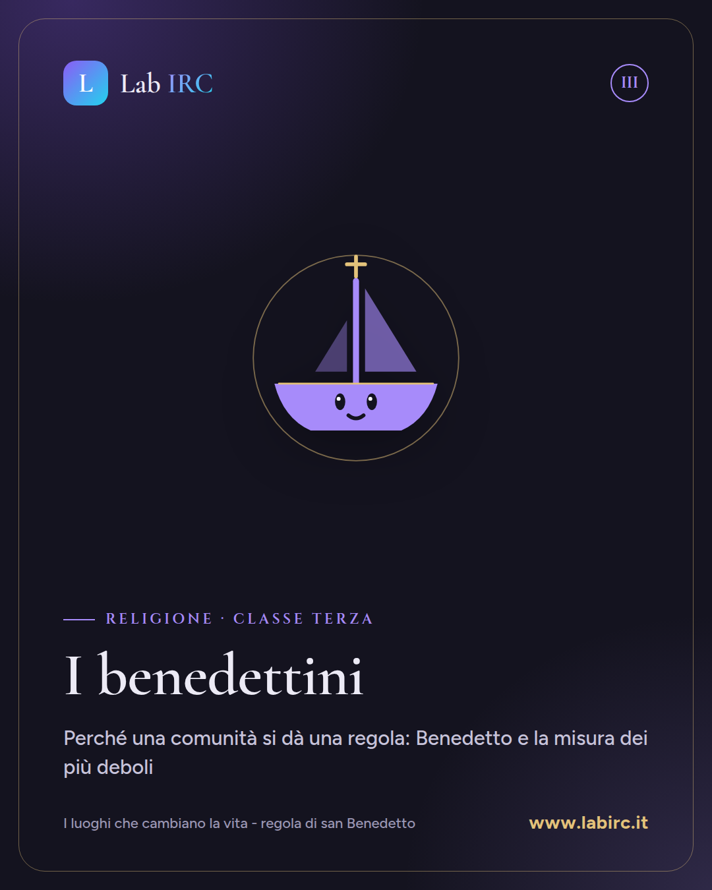
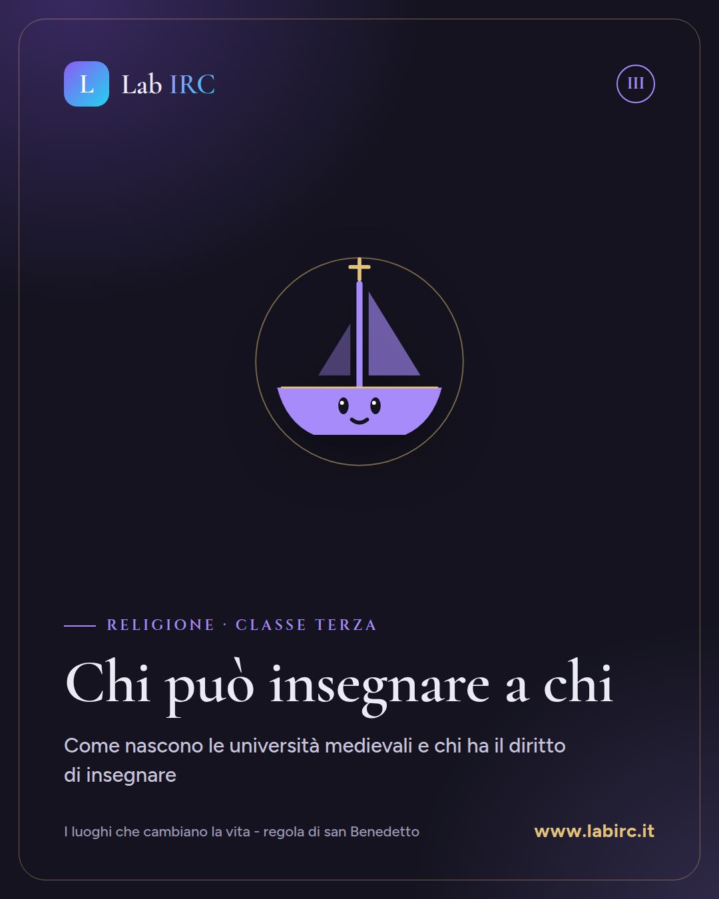
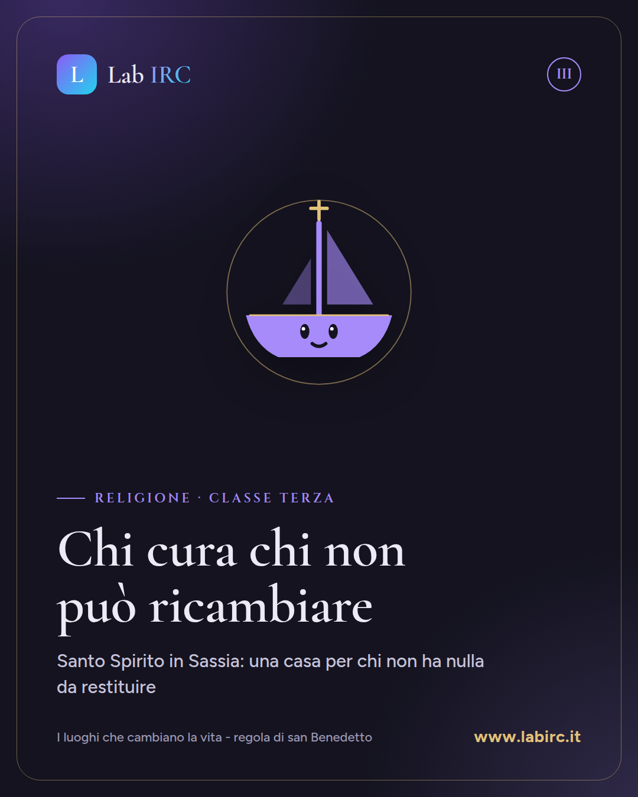
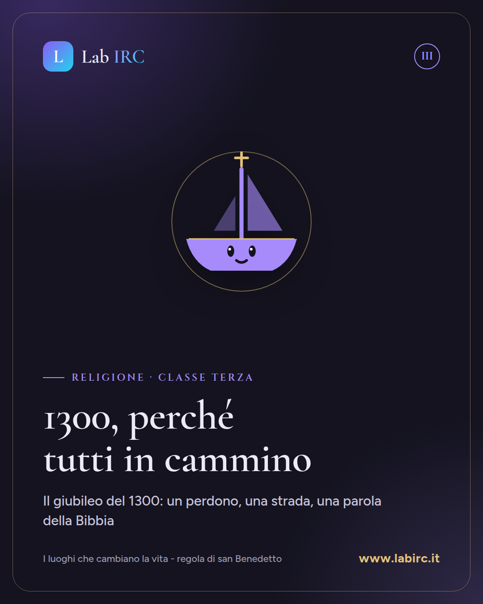
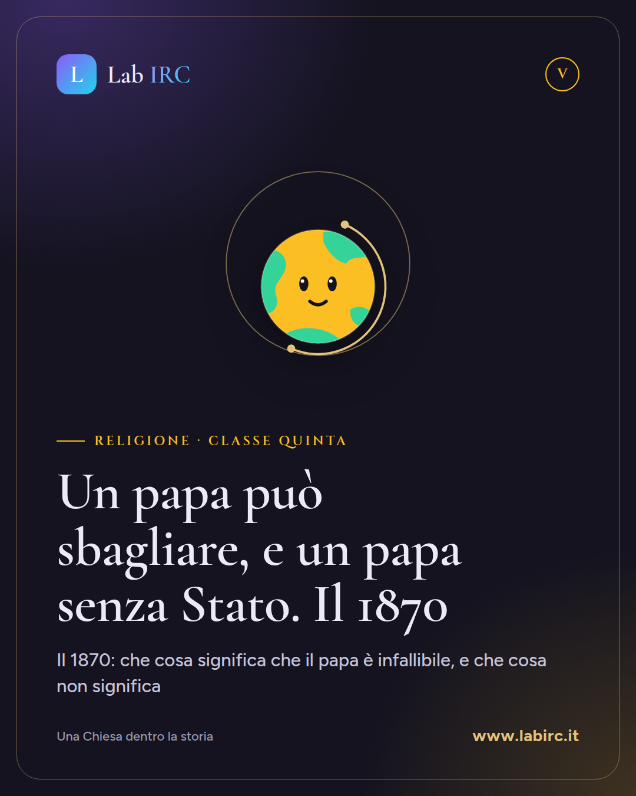

Come si usa. I post sono già in ordine: si alternano le cinque classi. Un buon ritmo è
due post a settimana, per esempio il lunedì e il giovedì.
Telegram, Pagina Facebook e Instagram escono da soli, un post il lunedì e uno il giovedì
(Facebook e Instagram solo quando la chiave di Meta è salvata su GitHub). WhatsApp: copia e incolla
nei gruppi di colleghi, senza mandare lo stesso messaggio a troppi gruppi lo stesso giorno.
Ogni lezione nuova che carichi riceve da sola i suoi post e la sua cartolina.
Che cosa hanno in comune la regola di san Benedetto, le due vie di Lemaître e la domanda «devo meritarmi tutto»? Sono alcune delle unità del Lab IRC, il laboratorio di Religione curato da Matteo Sestili, docente di Religione Cattolica nella scuola secondaria.
Qui raccoglie i materiali che usa in classe: slide, documenti, video e strumenti interattivi, organizzati per anno di corso. In prima le radici (il sacro, le grandi domande, la Bibbia), in seconda Gesù di Nazaret nella storia e nella fede, in terza la Chiesa nella storia e il rapporto tra scienza e fede, in quarta etica e senso, in quinta le sfide di oggi.
Tutto è consultabile online gratuitamente: si può proiettare in aula, usare come traccia o adattare alle proprie classi. Perché ogni domanda seria merita tempo, cura e bellezza. 📚
https://www.labirc.it/
Instagram
Un laboratorio per l'ora di Religione 📚
Slide, documenti, video e strumenti interattivi, organizzati per anno di corso.
Prima: il sacro, le grandi domande, la Bibbia.
Seconda: Gesù di Nazaret nella storia e nella fede.
Terza: la Chiesa nella storia, scienza e fede.
Quarta: libertà, coscienza, relazioni, giustizia.
Quinta: bioetica, ecologia, dottrina sociale.
Sono i materiali che Matteo Sestili, docente di Religione Cattolica, usa in classe: un luogo di riflessione critica, approfondimento storico-teologico e crescita umana.
Perché ogni domanda seria merita tempo, cura e bellezza.
Tutto si consulta online, gratuitamente. Il link è nella bio.
#religionecattolica #irc #oradireligione #docentidireligione #materialididattici #scuolasecondaria #classeprima #classeseconda #classeterza #classequarta #classequinta #bibbia #bioetica
WhatsApp
Ciao a tutti, vi segnalo il mio sito Lab IRC: ho raccolto lì i materiali che uso in classe, dalla prima alla quinta. Ci sono slide, documenti, video e strumenti interattivi, divisi per anno: la Bibbia, Gesù nella storia, la Chiesa nella storia, l'etica, la bioetica. È tutto online e gratuito, se vi serve qualcosa usatelo pure 🙂
https://www.labirc.it/
Telegram
Lab IRC — Il laboratorio di Religione 📚
Uno spazio con slide, documenti, video e strumenti interattivi per l'ora di Religione Cattolica, organizzati per anno di corso. Si parte in prima dalle radici (il sacro, le grandi domande, la Bibbia) e si arriva in quinta alle sfide di oggi, passando per Gesù di Nazaret, la Chiesa nella storia e le domande dell'etica. Tutto è consultabile online gratuitamente, da usare e adattare alle proprie classi.
https://www.labirc.it/
Pubblicato in automatico: Telegram il 2026-10-19, Facebook il 2026-10-19, Instagram il 2026-10-19.
«Agnostico» vuol dire disinteressato? «Ateo» vuol dire senza valori? «Credente» vuol dire senza dubbi? Sono tre equivoci frequenti, e la lezione «Credo, non credo, non so», pensata per la classe prima, aiuta a smontarli.
La lezione dà un nome preciso alle risposte possibili alla domanda «Dio esiste?»: teismo, ateismo, agnosticismo, indifferenza e ateismo pratico. Per ogni posizione esamina un argomento serio, con testi di Tommaso d'Aquino, e chiude sul rapporto fra fede e ragione nel magistero della Chiesa.
In classe può guidare una discussione senza caricature, grazie alla distinzione fra fatto, interpretazione e giudizio. Le domande finali verificano la chiarezza del ragionamento, non la posizione personale. 📘
https://www.labirc.it/lezioni/1/l-uomo-che-cerca-oltre-il-senso-religioso/credo-non-credo-non-so/
Instagram
Alla domanda «Dio esiste?» ognuno ha già una risposta, anche quando è un «boh».
Le risposte possibili, però, non sono infinite, e ognuna ha un nome: teismo, ateismo, agnosticismo. E poi l'indifferenza, che in realtà non risponde.
Nella lezione «Credo, non credo, non so», per la classe prima, si impara a descrivere ogni posizione come la descriverebbe chi la sostiene.
Si esamina un argomento serio per ciascuna, con Tommaso d'Aquino che dà la parola anche all'ateo. 📖
Una regola guida tutto: le persone si rispettano tutte, le tesi si discutono.
La lezione è sul Lab IRC: trovi il link nella bio.
#religionecattolica #irc #insegnantidireligione #classeprima #teismo #ateismo #agnosticismo #fedeeragione #domandasudio #tommasodaquino #sensoreligioso #scuolasuperiore
WhatsApp
Ciao a tutti, ho preparato per la prima una lezione su teismo, ateismo, agnosticismo e indifferenza: «Credo, non credo, non so». Ci sono gli equivoci più comuni, un argomento per ogni posizione con testi di Tommaso d'Aquino, il rapporto fra fede e ragione nel magistero e le domande finali. Se vi serve, è online e gratuita. 🙂
https://www.labirc.it/lezioni/1/l-uomo-che-cerca-oltre-il-senso-religioso/credo-non-credo-non-so/
Telegram
📘 Credo, non credo, non so – classe prima
Una lezione per dare un vocabolario preciso alla domanda «Dio esiste?»: teismo, ateismo, agnosticismo, indifferenza e ateismo pratico. Gli studenti smontano tre equivoci frequenti e prendono sul serio un argomento per ciascuna posizione, a partire dalla Summa theologiae di Tommaso d'Aquino. Chiudono il percorso il rapporto tra fede e ragione nel magistero e alcune domande di verifica.
https://www.labirc.it/lezioni/1/l-uomo-che-cerca-oltre-il-senso-religioso/credo-non-credo-non-so/
Pubblicato in automatico: Telegram il 2026-10-19, Facebook il 2026-10-19, Instagram il 2026-10-19.

Post 3 di 42 · Classe terza
I benedettini
I luoghi che cambiano la vita - regola di san Benedetto
Mezzo litro circa di vino al giorno, fissato «tenendo presente lo stato di salute dei più deboli». Che cosa dice una norma così della comunità che l'ha scritta?
La lezione «I benedettini», per la classe terza, parte dalla norma sullo smartphone a scuola e pone tre domande: a che cosa serve una regola, che cosa impone, per chi fa eccezione. Poi legge brani della Regola di Benedetto da Norcia: il fine dichiarato prima delle norme, la distinzione fra fine, regola ed efficienza, il modo in cui il testo tratta vino, lavoro, malati e ospiti, i limiti posti all'autorità dell'abate. C'è anche il confronto con Basilio di Cesarea e con la Regola del Maestro.
In classe si presta a un lavoro diretto sui testi e a una riflessione su come giudicare qualunque regolamento, a partire dal suo scopo. 📜
https://www.labirc.it/lezioni/3/i-luoghi-che-cambiano-la-vita-regola-di-san-benedetto/i-benedettini/
Instagram
Una regola di 1500 anni fa che parla ancora di tempo, di misura e di telefoni.
Si parte dalla norma sullo smartphone a scuola: prima di chiederci se è giusta, chiediamoci a che cosa serve, che cosa impone, per chi fa eccezione.
Poi si apre la Regola di Benedetto da Norcia. 📜
Il fine scritto prima delle norme: una «scuola di servizio divino», senza nulla di insopportabile.
Il vino misurato sui più deboli, il lavoro adattato a chi è gracile, i malati serviti «come Cristo in persona».
Gli ospiti accolti alla porta, i poveri e i pellegrini per primi.
Un abate che deve «giovare piuttosto che dominare» e ascoltare anche il più giovane.
Tre parole per leggere ogni regolamento: fine, regola, efficienza.
Lezione per la classe terza, con il confronto con Basilio e la Regola del Maestro. 🕯️
La trovi online, gratuita: il link è nella bio.
#religionecattolica #irc #sanbenedetto #regoladisanbenedetto #benedettini #monachesimo #classeterza #vitacomunitaria #smartphoneascuola #docentidireligione #materialididattici #scuolasuperiore
WhatsApp
Ciao a tutti, ho preparato una lezione per la terza sui benedettini. Parte dalla norma sullo smartphone a scuola per chiedersi perché una comunità si dà una regola, poi si leggono brani della Regola di Benedetto: vino, lavoro, malati, ospiti, limiti dell'abate. C'è anche il confronto con Basilio e la Regola del Maestro. Se vi serve, è gratuita 🙂
https://www.labirc.it/lezioni/3/i-luoghi-che-cambiano-la-vita-regola-di-san-benedetto/i-benedettini/
Telegram
📜 I benedettini: la misura dei più deboli (classe terza)
La lezione parte dalla norma sullo smartphone a scuola e chiede a che cosa serve una regola. Con brani della Regola di Benedetto distingue fine, regola ed efficienza e mostra come il testo tratta vino, lavoro, malati e ospiti, misurando le norme su chi fa più fatica. Chiude sui limiti dell'autorità dell'abate e sul confronto con Basilio e con la Regola del Maestro.
https://www.labirc.it/lezioni/3/i-luoghi-che-cambiano-la-vita-regola-di-san-benedetto/i-benedettini/
Un modello dell'universo può dimostrare la creazione? Novant'anni fa se lo chiese, con molta lucidità, l'uomo che per primo propose che l'universo avesse un inizio. Era un prete: Georges Lemaître, sacerdote e fisico.
La lezione per la classe quinta ripercorre la sua storia, dall'ipotesi dell'atomo primitivo alla legge di Hubble-Lemaître, e aiuta gli studenti a distinguere tre piani: il risultato scientifico, il dato biografico e l'interpretazione. Mette poi a confronto la dottrina cristiana della creazione con un modello fisico dell'inizio, attraverso testi di Lemaître, Tommaso d'Aquino e del Catechismo, e rilegge il discorso di Pio XII del 1951.
In classe si presta a una discussione seria sul rapporto fra scienza e fede, che eviti sia il concordismo sia il fideismo. 🔭
https://www.labirc.it/lezioni/5/le-due-vie-di-lemaitre/la-visione-cosmologica-di-lemaitre/
Instagram
«Ho troppo rispetto per Dio per poterne fare un'ipotesi scientifica».
Lo ripeteva Georges Lemaître, sacerdote e fisico, padre dell'ipotesi dell'atomo primitivo: l'antenato di quello che oggi chiamiamo Big Bang. 🌌
Nella lezione per la quinta si impara a distinguere tre piani: il risultato scientifico, il dato biografico, l'interpretazione.
Si confronta la creazione, come la intende la fede cristiana, con un modello fisico dell'inizio. Si leggono Lemaître, Tommaso d'Aquino e il Catechismo, e si esamina il discorso di Pio XII del 1951.
Una domanda di fondo: scienza e fede possono parlarsi, senza confondersi e senza ignorarsi?
La lezione è consultabile gratuitamente: il link è nella bio. 📖
#religionecattolica #irc #lemaitre #bigbang #scienzaefede #creazione #cosmologia #atomoprimitivo #tommasodaquino #classequinta #docentidireligione #insegnantidireligione #materialididattici
WhatsApp
Ciao a tutti, ho preparato una lezione per la quinta su Georges Lemaître, il sacerdote e fisico dell'atomo primitivo. Lavora sulla distinzione fra risultato scientifico, dato biografico e interpretazione, con testi di Lemaître, Tommaso e del Catechismo e il discorso di Pio XII del 1951. Se vi serve per scienza e fede, la trovate qui sotto. 🙂
https://www.labirc.it/lezioni/5/le-due-vie-di-lemaitre/la-visione-cosmologica-di-lemaitre/
Telegram
🔭 Nuova lezione per la quinta: la visione cosmologica di Lemaître
Georges Lemaître, sacerdote e fisico, propose per primo che l'universo avesse un inizio, ma rifiutò di farne una prova di Dio. La lezione insegna a distinguere risultato scientifico, dato biografico e interpretazione, e confronta la dottrina della creazione con un modello fisico dell'inizio attraverso testi di Lemaître, Tommaso d'Aquino, del Catechismo e il discorso di Pio XII del 1951. Chiude riflettendo sui due errori opposti: concordismo e fideismo.
https://www.labirc.it/lezioni/5/le-due-vie-di-lemaitre/la-visione-cosmologica-di-lemaitre/
Una freccia all'ingresso di un edificio indica dove andare. Un anello scambiato durante un matrimonio custodisce una promessa. Entrambi rimandano a qualcosa, ma in modi diversi. Da qui parte la lezione «Segni e simboli», pensata per la classe prima: la differenza tra segno e simbolo, l'origine della parola sýmbolon, la tesi di Ernst Cassirer sull'essere umano come animale simbolico, le nozioni di sacro e profano. Seguono il racconto di Giacobbe a Betel (Gen 28,10-19), alcuni luoghi di culto (l'altare, l'aron ha-qodesh, il mihrab) e i tempi sacri: Shabbat, domenica, anno liturgico. Il fascicolo si chiude con quattro domande di studio, utilizzabili in classe o per il lavoro a casa, che chiedono di interpretare un luogo o un giorno a partire dal contesto e dalle fonti indicate. 📖
https://www.labirc.it/lezioni/1/l-uomo-che-cerca-oltre-il-senso-religioso/segni-e-simboli/
Instagram
Un oggetto, un luogo o un giorno possono dire più di ciò che sono?
Una freccia indica una direzione. Un anello può custodire una promessa. 💍
Nella lezione «Segni e simboli» per la classe prima si parte da questa differenza per arrivare al linguaggio religioso.
Dentro trovi la parola sýmbolon e il suo significato, l'animale simbolico di Cassirer, sacro e profano (che non vuol dire cattivo).
Poi Giacobbe a Betel e la pietra che custodisce la memoria di un incontro. L'altare, l'aron ha-qodesh, il mihrab. Lo Shabbat, la domenica, l'anno liturgico.
Quattro domande di studio aiutano a leggere luoghi e giorni a partire dal contesto e dalle fonti.
Il fascicolo è gratuito e consultabile online: il link è nella bio. 📖
#religionecattolica #irc #segniesimboli #sacroeprofano #linguaggioreligioso #classeprima #cassirer #giacobbe #luoghidiculto #tempisacri #annoliturgico #docentidireligione
WhatsApp
Ciao a tutti, ho preparato una lezione per le prime su segni e simboli: si parte dalla freccia e dall'anello, poi Cassirer, sacro e profano, Giacobbe a Betel, altare, aron ha-qodesh e mihrab, Shabbat e domenica. In fondo ci sono quattro domande di studio. È gratuita e si consulta online: se può servirvi, la trovate qui sotto.
https://www.labirc.it/lezioni/1/l-uomo-che-cerca-oltre-il-senso-religioso/segni-e-simboli/
Telegram
Classe prima · Segni e simboli, luoghi e tempi sacri
Una nuova lezione per introdurre il linguaggio religioso a partire dalla differenza tra segno e simbolo, con gli esempi della freccia e dell'anello. Il percorso tocca la tesi di Cassirer sull'animale simbolico, le nozioni di sacro e profano, il racconto di Giacobbe a Betel, alcuni luoghi di culto e i tempi sacri: Shabbat, domenica, anno liturgico. Chiudono quattro domande di studio. 📖
https://www.labirc.it/lezioni/1/l-uomo-che-cerca-oltre-il-senso-religioso/segni-e-simboli/
«Quello che è di Cesare rendetelo a Cesare»: si può capire questa frase senza sapere dove, quando e fra chi è stata detta? La lezione «Gesù sotto il segno dell'aquila», per la classe seconda, parte da un episodio narrato da Giuseppe Flavio, l'aquila d'oro abbattuta sulla porta del Tempio, e ricostruisce la terra di Gesù: il dominio romano, la divisione del regno di Erode, i due governi di Galilea e Giudea, le correnti del giudaismo. Si legge Lc 3,1-2 come una mappa del potere, si torna alla domanda sul tributo in Mc 12 e si arriva all'incarnazione e alla lettura corretta del rapporto tra Gesù e il suo popolo, con Nostra aetate 4. Il fascicolo si chiude con quattro domande di comprensione e riflessione, utili per il lavoro in classe o a casa. Fa parte dell'unità «Gesù: quali tracce?».
https://www.labirc.it/lezioni/2/gesu-quali-tracce/gesu-sotto-il-segno-dell-aquila/
Instagram
Un'aquila d'oro sopra la porta del Tempio di Gerusalemme. Alcuni giovani la abbattono a colpi d'ascia, e pagano con la vita. 🦅
Da questo episodio, raccontato da Giuseppe Flavio, parte la nuova lezione per la classe seconda: «Gesù sotto il segno dell'aquila».
Chi comandava al tempo di Gesù? Roma, i figli di Erode, un prefetto in Giudea e un tetrarca in Galilea. E un popolo con molte voci: farisei, sadducei, esseni, erodiani.
Si legge Lc 3,1-2 come una mappa e si torna alla domanda sul tributo a Cesare: una trappola, se si conosce il contesto. 📖
In chiusura, l'incarnazione e una lettura corretta del rapporto tra Gesù e il suo popolo, con quattro domande per riflettere.
Il fascicolo è consultabile gratuitamente: trovi il link nella bio.
#religionecattolica #irc #insegnantidireligione #gesustorico #vangeli #giudaismo #imperoromano #classeseconda #scuolasuperiore #didattica #bibbia #nostraaetate
WhatsApp
Ciao a tutti, ho preparato una lezione per le seconde sul contesto storico di Gesù: dominio romano, regno di Erode diviso, Galilea e Giudea, farisei, sadducei, esseni ed erodiani. Si lavora su Lc 3,1-2 e sulla domanda del tributo in Mc 12, con quattro domande finali. Se vi serve, è online gratis 📜
https://www.labirc.it/lezioni/2/gesu-quali-tracce/gesu-sotto-il-segno-dell-aquila/
Telegram
Gesù sotto il segno dell'aquila — classe seconda 🦅
Una lezione per ricostruire dove, quando e fra chi è vissuto Gesù: il dominio romano, la divisione del regno di Erode, i governi di Galilea e Giudea e le correnti del giudaismo. Lc 3,1-2 diventa una mappa del potere e la domanda sul tributo a Cesare (Mc 12) si comprende nel suo contesto. Il fascicolo tocca anche l'incarnazione e il rapporto tra Gesù e il suo popolo, e si chiude con quattro domande di comprensione e riflessione.
https://www.labirc.it/lezioni/2/gesu-quali-tracce/gesu-sotto-il-segno-dell-aquila/
Pubblicato in automatico: Telegram il 2026-10-22, Facebook il 2026-10-22, Instagram il 2026-10-22.

Post 7 di 42 · Classe terza
Chi può insegnare a chi
I luoghi che cambiano la vita - regola di san Benedetto
Un maestro può conoscere molti libri e spiegare male. Uno studente può porre una domanda che il maestro non si era posto. Chi ha dunque il diritto di insegnare, e chi può mettere alla prova ciò che viene insegnato?
Da questa domanda parte la lezione per la classe terza sulla nascita delle università medievali. Ricostruisce il legame tra ricerca di Dio e studio dei testi, le scuole monastiche e cattedrali, la crescita delle città e il bisogno di competenze. Presenta poi il metodo scolastico, con lectio, quaestio e disputatio, e gli statuti del 1215, che chiedevano età, anni di studio ed esame e vietavano di ottenere la licenza d'insegnamento con il denaro.
In classe aiuta a distinguere autorità e autorevolezza. Le domande di studio chiedono di rispondere con fonti e argomenti, anche su un caso concreto: un esperto che non cita fonti e uno studente con un'obiezione documentata. 📚
https://www.labirc.it/lezioni/3/i-luoghi-che-cambiano-la-vita-regola-di-san-benedetto/chi-puo-insegnare-a-chi/
Instagram
Chi può insegnare a chi? 🎓
Un maestro può conoscere molti libri e spiegare male. Uno studente può porre una domanda che il maestro non si era posto.
La nuova lezione per la classe terza racconta come queste domande abbiano preso forma nelle università medievali.
Si parte dai monasteri, dove leggere con attenzione era parte della vita religiosa. Poi le scuole delle cattedrali, le città che crescono e hanno bisogno di competenze, i testi arrivati attraverso le traduzioni.
C'è il metodo scolastico: leggere un testo, trasformare una difficoltà in questione, discutere con argomenti e obiezioni.
E ci sono gli statuti del 1215: per insegnare servivano preparazione ed esame, non denaro.
Il cuore della lezione è una distinzione utile ancora oggi: autorità e autorevolezza non coincidono. ✍️
Trovi la lezione completa al link in bio.
#religionecattolica #irc #classeterza #universitamedievali #medioevo #scolastica #tommasodaquino #autoritaeautorevolezza #fedeeragione #storiadellachiesa #docentidireligione #materialididattici
WhatsApp
Ciao a tutti, ho preparato una lezione per la terza sulla nascita delle università medievali: scuole monastiche e cattedrali, crescita delle città, metodo scolastico, statuti del 1215. Il filo è la domanda «chi può insegnare a chi?», con la distinzione tra autorità e autorevolezza e domande di studio da svolgere con fonti e argomenti. Se può esservi utile, è online e gratuita. 🙂
https://www.labirc.it/lezioni/3/i-luoghi-che-cambiano-la-vita-regola-di-san-benedetto/chi-puo-insegnare-a-chi/
Telegram
🎓 Classe terza – Chi può insegnare a chi?
La lezione ricostruisce la nascita delle università medievali, dal legame tra ricerca di Dio e studio dei testi alle scuole monastiche e cattedrali, fino alle città che chiedono nuove competenze. Presenta il metodo scolastico con lectio, quaestio e disputatio e gli statuti del 1215, che legavano la licenza d'insegnamento a una preparazione verificata. Chiudono domande di studio sulla differenza tra autorità e autorevolezza.
https://www.labirc.it/lezioni/3/i-luoghi-che-cambiano-la-vita-regola-di-san-benedetto/chi-puo-insegnare-a-chi/
«La Chiesa vendeva il perdono.» Quante volte l'abbiamo sentita, senza che nessuno la controllasse? La lezione per la classe quarta parte da qui e distingue tre piani: la dottrina sulle indulgenze, il modo in cui venivano amministrate e le distorsioni nella pratica. Si ricostruisce il contesto del 1517: la predicazione di Tetzel, il debito di Alberto di Brandeburgo con i Fugger, il cantiere della nuova basilica di San Pietro. Si leggono la definizione di Paolo VI, la voce Treccani e alcune tesi di Lutero, poi la risposta di Roma, da Leone X al Concilio di Trento. In classe può diventare un esercizio di metodo: riconoscere su quale piano si colloca una critica e chiedersi quando una protesta ha buone ragioni. È la prima lezione dell'unità «Riformare una Chiesa, cambiare una cultura».
https://www.labirc.it/lezioni/4/riformare-una-chiesa-cambiare-una-cultura/riformare-una-chiesa-le-indulgenze/
Instagram
«La Chiesa vendeva il perdono.»
Una frase che si ripete spesso. Ma regge alla verifica?
Nella lezione per la classe quarta proviamo a distinguere tre cose: ciò che la Chiesa insegnava, il modo in cui veniva amministrato, ciò che accadeva davvero intorno alla cassa delle offerte. 📜
1517: un frate predicatore, un arcivescovo indebitato con i banchieri, il cantiere della nuova basilica di San Pietro.
Poi le fonti: Paolo VI sulla differenza tra colpa e pena, la Treccani sugli abusi, le tesi di Lutero sulla moneta che tintinna nella cassa. E la risposta di Roma, da Leone X al Concilio di Trento.
Resta una domanda che vale anche oggi: quando una protesta ha buone ragioni? 🤔
La lezione è gratuita e consultabile online: trovi il link nella bio.
#religionecattolica #irc #indulgenze #lutero #riformaprotestante #storiadellachiesa #concilioditrento #classequarta #docentidireligione #insegnamentoreligionecattolica #didattica #scuolasuperiore
WhatsApp
Ciao a tutti, ho preparato per la quarta una lezione sulle indulgenze del 1517. Parte dalla frase «la Chiesa vendeva il perdono» e aiuta a distinguere dottrina, procedura e distorsioni, con fonti alla mano: Paolo VI, Treccani, alcune tesi di Lutero, Leone X e Trento. È consultabile online gratis, se vi può servire la trovate qui sotto.
https://www.labirc.it/lezioni/4/riformare-una-chiesa-cambiare-una-cultura/riformare-una-chiesa-le-indulgenze/
Telegram
📜 Classe quarta · Riformare una Chiesa: le indulgenze
Nuova lezione dell'unità «Riformare una Chiesa, cambiare una cultura». Il 1517 letto su tre piani: la dottrina cattolica sulle indulgenze, il modo in cui venivano amministrate, le distorsioni nella pratica. Tra le fonti la definizione di Paolo VI, la voce Treccani, alcune tesi di Lutero e la risposta di Roma fino al Concilio di Trento. Al centro una domanda: quando una protesta ha buone ragioni?
https://www.labirc.it/lezioni/4/riformare-una-chiesa-cambiare-una-cultura/riformare-una-chiesa-le-indulgenze/
Dire che una stella è una creatura significa forse aggiungere un combustibile accanto all'idrogeno? Da questa domanda prende avvio «Creazione e primo istante», lezione per la classe quinta dell'unità «Le due vie di Lemaître». Gli studenti imparano a distinguere la domanda scientifica sull'origine dell'universo da quella filosofica e teologica sul fondamento dell'esistenza. Leggono Genesi 1 con attenzione al genere letterario, come chiede la Dei Verbum 12, e chiariscono la differenza tra fabbricare e creare ex nihilo. Incontrano poi la conservazione nell'essere secondo il Catechismo e Tommaso d'Aquino. Ampio spazio è dato alle obiezioni, al valore delle cause naturali e al rischio di un uso apologetico affrettato del Big Bang. È un materiale adatto a un confronto argomentato in classe, che rispetta chi crede e chi non crede. 🌌
https://www.labirc.it/lezioni/5/le-due-vie-di-lemaitre/creazione-e-primo-istante/
Instagram
Creazione significa soltanto primo istante? 🌌
La cosmologia ricostruisce la storia dell'universo. La domanda sulla creazione chiede altro: quale rapporto ha con Dio tutto ciò che esiste, anche adesso?
In questa lezione per la quinta si legge Genesi 1 nel suo linguaggio: la luce nel primo giorno, gli astri nel quarto, il riposo nel settimo. Sole e luna sono creature, non potenze divine.
Un falegname trasforma legno che già esiste. Creare, invece, significa dare l'essere alla realtà intera: è il senso di ex nihilo. E la creatura dipende da Dio anche nel presente, come affermano il Catechismo e Tommaso d'Aquino.
Si discutono anche le obiezioni, il valore delle cause naturali e il rischio di usare il Big Bang come prova affrettata.
La lezione è online gratuitamente: il link è nella bio. 📖
#religionecattolica #irc #classequinta #creazione #bigbang #scienzaefede #genesi #lemaitre #tommasodaquino #cosmologia #docentidireligione #insegnamentoreligionecattolica
WhatsApp
Ciao a tutti, ho preparato per le quinte una lezione su creazione e Big Bang. Distingue la domanda scientifica sull'origine dell'universo da quella sul fondamento dell'esistenza, legge Genesi 1 attenta al genere letterario e spiega la differenza tra fabbricare e creare. C'è spazio anche per le obiezioni. Se vi può servire, è online e gratuita.
https://www.labirc.it/lezioni/5/le-due-vie-di-lemaitre/creazione-e-primo-istante/
Telegram
🌌 Creazione e primo istante, classe quinta
Nuova lezione dell'unità «Le due vie di Lemaître»: gli studenti distinguono la domanda scientifica sull'origine del cosmo da quella filosofica e teologica sul fondamento dell'esistenza. Si legge Genesi 1 secondo il suo genere letterario e si chiarisce la differenza tra fabbricare e creare ex nihilo, con la conservazione nell'essere secondo il Catechismo e Tommaso d'Aquino. Chiudono la lezione le obiezioni, il ruolo delle cause naturali e il rischio di un uso apologetico affrettato del Big Bang.
https://www.labirc.it/lezioni/5/le-due-vie-di-lemaitre/creazione-e-primo-istante/
Una pietra, una tomba e una roccia, a pochi passi l'una dall'altra: che cosa vedono ebrei, cristiani e musulmani quando guardano Gerusalemme? La lezione per la classe prima presenta il Muro occidentale, la basilica del Santo Sepolcro e la Cupola della Roccia, e spiega quale memoria custodisce ciascun luogo: il Tempio che non c'è più, la morte e risurrezione di Gesù, il viaggio notturno di Muhammad. Gli studenti collocano i luoghi in uno schema della Città Vecchia, imparano a non confondere la Cupola con la moschea al-Aqsa e a distinguere ciò che può studiare l'archeologia da ciò che afferma la fede. Una parte è dedicata al controllo dei fatti, partendo da un episodio dei Simpson ambientato in Terra Santa: che cosa mostra, esagera o inventa una parodia? Chiudono quattro domande di studio, adatte anche a una discussione in classe.
https://www.labirc.it/lezioni/1/israele-una-promessa-una-storia-fino-a-oggi/gerusalemme-una-citta-di-memorie/
Instagram
Perché tre fedi guardano alla stessa città? 🕊️
Nella Città Vecchia di Gerusalemme, a breve distanza, ci sono il Muro occidentale, il Santo Sepolcro e la Cupola della Roccia.
Per l'ebraismo: il Tempio distrutto nel 70 d.C. e il Salmo 122, canto dei pellegrini.
Per i cristiani: il Calvario e la tomba vuota, segno della Pasqua.
Per l'islam: il viaggio notturno di Muhammad e la roccia venerata.
Luoghi vicini, significati diversi. Accostarli non vuol dire che insegnino la stessa cosa.
La lezione per la classe prima insegna anche a controllare i fatti: una parodia dei Simpson diventa il punto di partenza per chiedersi che cosa una scena modifica e su quale fonte verificarlo.
Schema della Città Vecchia e quattro domande di studio inclusi.
Trovi la lezione con il link in bio 📖
#religionecattolica #irc #gerusalemme #classeprima #ebraismo #cristianesimo #islam #luoghisanti #murooccidentale #santosepolcro #cupoladellaroccia #pellegrinaggio #docentidireligione
WhatsApp
Ciao a tutti, ho preparato una lezione per la prima su Gerusalemme come città di memorie: Muro occidentale, Santo Sepolcro e Cupola della Roccia, con uno schema della Città Vecchia da completare. C'è anche una parte sul controllo dei fatti a partire da un episodio dei Simpson, e quattro domande di studio. È consultabile online gratis, se vi serve 🙂
https://www.labirc.it/lezioni/1/israele-una-promessa-una-storia-fino-a-oggi/gerusalemme-una-citta-di-memorie/
Telegram
🕊️ Gerusalemme, una città di memorie – classe prima
La lezione presenta il Muro occidentale, il Santo Sepolcro e la Cupola della Roccia, distinguendo il legame di ciascun luogo con ebraismo, cristianesimo e islam. Gli studenti li collocano in uno schema della Città Vecchia e imparano a separare ciò che studia l'archeologia da ciò che afferma la fede. Un episodio dei Simpson diventa l'occasione per esercitarsi a verificare i fatti e a evitare le generalizzazioni, con quattro domande di studio finali.
https://www.labirc.it/lezioni/1/israele-una-promessa-una-storia-fino-a-oggi/gerusalemme-una-citta-di-memorie/
Una frase antica compare sullo schermo: un autore romano parla di Cristo. Basta leggerla per sapere che cosa è accaduto?
«Lo screenshot non basta» è la seconda lezione dell'unità «Gesù: quali tracce?» per la classe seconda. Gli studenti imparano a distinguere la data dell'evento dalla data del testo e il genere del documento dal giudizio dell'autore. Poi leggono brevi passi di Tacito (Annali XV,44) e di Plinio il Giovane, con la risposta di Traiano (Lettere X,96-97), in traduzione originale.
In classe si può lavorare sulle quattro domande di studio, fino alla correzione di un post che afferma «Tacito vide Gesù e Plinio confermò tutti i Vangeli». La conclusione richiesta resta proporzionata ai documenti e si collega al rapporto tra fede e storia nella Dei Verbum, n. 19. 📜
https://www.labirc.it/lezioni/2/gesu-quali-tracce/lo-screenshot-non-basta/
Instagram
Un autore romano parla di Cristo. Basta uno screenshot per capire che cosa è accaduto?
Nella nuova lezione per la classe seconda leggiamo Tacito e Plinio il Giovane, insieme alla risposta dell'imperatore Traiano.
Prima, però, impariamo a restituire alla frase ciò che il ritaglio ha tolto: chi scrive, quando e per quale scopo.
Data dell'evento e data del testo. Notizia e giudizio dell'autore. Culto riferito e verità creduta: sono piani diversi.
Quattro domande di studio, un post impreciso da correggere e una conclusione proporzionata ai documenti, collegata alla Dei Verbum. 📜
Lezione, testi e domande sono consultabili gratuitamente: trovi il link nella bio.
#religionecattolica #irc #insegnantedireligione #gesustorico #fontistoriche #tacito #plinioilgiovane #cristianesimoantico #fedeestoria #deiverbum #classeseconda #scuolasuperiore
WhatsApp
Ciao a tutti, ho preparato per la seconda una lezione sulle fonti romane su Gesù: brevi passi di Tacito e di Plinio con la risposta di Traiano, in traduzione. Lavora sul metodo (data dell'evento e data del testo, notizia e giudizio dell'autore) e chiude con un post impreciso da correggere. È online gratis, se vi può servire.
https://www.labirc.it/lezioni/2/gesu-quali-tracce/lo-screenshot-non-basta/
Telegram
Lo screenshot non basta: Tacito e Plinio su Gesù e sui cristiani 📜
È la nuova lezione per la classe seconda, nell'unità «Gesù: quali tracce?». Gli studenti leggono Annali XV,44 e Lettere X,96-97, distinguendo la data dell'evento da quella del testo e l'informazione dal giudizio dell'autore. Quattro domande di studio guidano verso una conclusione proporzionata ai documenti, collegata al rapporto tra fede e storia nella Dei Verbum.
https://www.labirc.it/lezioni/2/gesu-quali-tracce/lo-screenshot-non-basta/

Post 12 di 42 · Classe terza
Chi cura chi non può ricambiare
I luoghi che cambiano la vita - regola di san Benedetto
Un neonato abbandonato, un malato grave, un povero senza nulla: se l'aiuto fosse riservato a chi può restituire, resterebbero fuori proprio loro. La terza lezione dell'unità «I luoghi che cambiano la vita», per la classe terza, ricostruisce la nascita dell'ospedale di Santo Spirito in Sassia: da fratel Guido a Montpellier a Innocenzo III, fino alla casa romana fondata fra il 1198 e il 1201. Gli studenti leggono la bolla del 1198 e due passi del Vangelo (Mt 25 e Lc 14), riassumono i capitoli della regola e chiariscono le parole ospedale, gratuità e carità. Poi si chiedono chi sosteneva i costi e che cosa le fonti non possono dirci: la regola prescrive, ma non prova la qualità della cura ricevuta. Un materiale per lavorare in classe su fonti storiche e testo biblico insieme.
https://www.labirc.it/lezioni/3/i-luoghi-che-cambiano-la-vita-regola-di-san-benedetto/chi-cura-chi-non-puo-ricambiare/
Instagram
Chi cura chi non può ricambiare?
Un neonato abbandonato, un malato grave, un povero senza nulla. A Roma, fra il 1198 e il 1201, nasce una casa la cui regola nomina proprio queste persone e manda i fratelli a cercarle per le strade.
È l'ospedale di Santo Spirito in Sassia: dall'intuizione di un laico, fratel Guido di Montpellier, all'appoggio di Innocenzo III. 🕯️
Nella lezione per la classe terza: la bolla del 1198, i passi di Matteo 25 e Luca 14, i capitoli della regola riassunti, le parole ospedale, gratuità e carità.
E due domande aperte: chi pagava? E che cosa le fonti non riescono a provare? 📜
La lezione è consultabile gratuitamente: trovi il link nella bio.
#religionecattolica #irc #classeterza #santospirito #ospedale #gratuita #carita #operedimisericordia #innocenzoiii #regoladisanbenedetto #medioevo #vangelo #storiadellachiesa #docentidireligione
WhatsApp
Ciao a tutti, ho preparato una lezione per la terza sull'ospedale di Santo Spirito in Sassia: da fratel Guido a Innocenzo III, con la bolla del 1198, Mt 25 e Lc 14, i capitoli della regola e la domanda su chi pagava i costi. Lavora bene anche sul limite delle fonti. È gratuita e consultabile online, se può servirvi.
https://www.labirc.it/lezioni/3/i-luoghi-che-cambiano-la-vita-regola-di-san-benedetto/chi-cura-chi-non-puo-ricambiare/
Telegram
Chi cura chi non può ricambiare? Santo Spirito in Sassia 📜
Una nuova lezione per la classe terza ricostruisce la nascita dell'ospedale romano, da fratel Guido di Montpellier a Innocenzo III. Gli studenti leggono la bolla del 1198 e i passi di Matteo 25 e Luca 14, riassumono i capitoli della regola e chiariscono i termini ospedale, gratuità e carità. Si chiude chiedendosi chi sosteneva i costi e che cosa le fonti non possono dimostrare sulla cura ricevuta.
https://www.labirc.it/lezioni/3/i-luoghi-che-cambiano-la-vita-regola-di-san-benedetto/chi-cura-chi-non-puo-ricambiare/
Aprile 1521, Worms: a Martin Lutero vengono mostrati i suoi libri e poste due domande essenziali. Li riconosce come suoi? È disposto a ritirarli? La lezione per la classe quarta ricostruisce quei giorni partendo dalle indulgenze, dalla bolla Exsurge Domine e dalla scomunica. Mette poi a confronto due criteri: quello di Lutero, fondato sulla Scrittura, e quello dell'imperatore e della Chiesa, che richiamano la fede trasmessa e l'unità della cristianità. Aiuta anche a distinguere i fatti dalla memoria successiva: il celebre «Qui sto» compare nelle stampe del 1521, ma non è una frase sicuramente pronunciata. L'ultima parte chiarisce che cosa intende per coscienza l'insegnamento cattolico, con un esempio immaginario utile per discutere in classe la differenza tra correggere una convinzione e forzare un'adesione. 📖
https://www.labirc.it/lezioni/4/riformare-una-chiesa-cambiare-una-cultura/lutero-a-worms/
Instagram
«La mia coscienza è prigioniera della parola di Dio».
Worms, 18 aprile 1521. Davanti a Carlo V, Lutero rifiuta di ritrattare.
Non è solo lo scontro tra un religioso e un imperatore: in gioco c'è il criterio con cui riconoscere la verità. 📜
Nella lezione per la classe quarta:
– dalle indulgenze alla scomunica
– i due giorni della dieta imperiale
– perché il «Qui sto» va letto con cautela
– l'editto, la Wartburg e il ruolo della stampa
– che cos'è la coscienza secondo l'insegnamento cattolico
Una coscienza da seguire, ma anche da educare.
La lezione è consultabile gratuitamente online: trovi il link nella bio.
#religionecattolica #irc #lutero #riformaprotestante #dietadiworms #carlov #coscienza #storiadellachiesa #indulgenze #classequarta #docentidireligione #insegnantidireligione
WhatsApp
Ciao a tutti, ho preparato una lezione per la quarta su Lutero alla dieta di Worms: dalle indulgenze alla scomunica, il confronto tra il criterio della Scrittura e quello dell'autorità ecclesiale, la cautela sul «Qui sto» e una parte sulla coscienza secondo l'insegnamento cattolico, con un esempio immaginario su cui far discutere. Se vi può servire, la trovate qui sotto.
https://www.labirc.it/lezioni/4/riformare-una-chiesa-cambiare-una-cultura/lutero-a-worms/
Telegram
Lutero a Worms: chi giudica la coscienza? 📜
Nuova lezione per la classe quarta. Ricostruisce l'incontro del 1521 tra Lutero e Carlo V, dalle novantacinque tesi all'editto imperiale, distinguendo la scomunica dal bando dell'Impero e i fatti dalla memoria successiva. La parte finale chiarisce il concetto di coscienza nell'insegnamento cattolico: un giudizio da seguire e, insieme, da formare, con un esempio immaginario per il confronto in classe.
https://www.labirc.it/lezioni/4/riformare-una-chiesa-cambiare-una-cultura/lutero-a-worms/
«Più adatto a che cosa?» Basta questa domanda per smontare un equivoco frequente: trasformare la selezione naturale in una graduatoria di valore tra le persone.
La terza lezione dell'unità sulle due vie di Lemaître, pensata per la classe quinta, parte dalle prove dell'evoluzione (fossili, anatomia, genetica). Chiarisce poi che cosa significano selezione naturale e fitness e mostra perché da una descrizione biologica non discende una regola morale. Infine apre ai testi: Genesi 1,27, Humani generis, il messaggio di Giovanni Paolo II del 1996, il Catechismo e Dignitas infinita.
In classe può servire per lavorare sulla distinzione tra affermazioni scientifiche e teologiche. Permette anche di discutere con gli studenti un'idea semplice ed esigente: la dignità non segue la prestazione.
https://www.labirc.it/lezioni/5/le-due-vie-di-lemaitre/levoluzione-decide-quanto-valiamo/
Instagram
L'evoluzione decide quanto valiamo? 🧬
Il nostro corpo porta le tracce di una parentela con altri viventi. Fossili, anatomia e genetica lo mostrano in modo convergente.
Ma una spiegazione biologica può diventare una classifica delle persone?
In questa lezione per la quinta si impara a chiedersi: più adatto a che cosa? La fitness riguarda il successo riproduttivo in un dato ambiente, non la forza né il valore morale.
Poi la parola passa ai testi: da Genesi 1,27 a Humani generis, dal messaggio di Giovanni Paolo II del 1996 al Catechismo e a Dignitas infinita.
Creazione, imago Dei, unità di anima e corpo. La dignità non aumenta con le prestazioni e non diminuisce con la dipendenza.
La lezione è consultabile gratuitamente: trovi il link nella bio. 📖
#religionecattolica #irc #insegnantidireligione #classequinta #evoluzione #selezionenaturale #dignitaumana #scienzaefede #imagodei #dignitasinfinita #antropologiacristiana #lemaitre #scuolasuperiore
WhatsApp
Ciao a tutti, ho preparato per la quinta una lezione su evoluzione e dignità umana. Si parte dalle prove dell'evoluzione, dalla selezione naturale e dalla fitness. Poi si leggono Humani generis, Giovanni Paolo II (1996), il Catechismo e Dignitas infinita. Il filo è uno: la biologia descrive, ma non stabilisce quanto vale una persona. È online e gratuita, se vi può servire.
https://www.labirc.it/lezioni/5/le-due-vie-di-lemaitre/levoluzione-decide-quanto-valiamo/
Telegram
📘 Quinta · L'evoluzione decide quanto valiamo?
Nuova lezione dell'unità sulle due vie di Lemaître. Dalle prove dell'evoluzione si passa al significato di selezione naturale e fitness, per mostrare che una descrizione biologica non diventa una graduatoria di valore. Segue la lettura di Humani generis, del messaggio di Giovanni Paolo II del 1996, del Catechismo e di Dignitas infinita su creazione, imago Dei, anima e corpo e dignità indipendente dalle prestazioni.
https://www.labirc.it/lezioni/5/le-due-vie-di-lemaitre/levoluzione-decide-quanto-valiamo/
Baal, dio della tempesta, con la clava alzata su una stele oggi al Louvre. E poi una voce che dice ad Abramo: «Vattene dalla tua terra». Che differenza c'è fra molti dèi e un Dio che chiama?
È la domanda della seconda lezione dell'unità su Israele per la classe prima. Si parte dagli dèi di Esiodo e di Ugarit, si legge Genesi 12,1-3 con le sue tre promesse (terra, discendenza, benedizione) e si segue Abramo fino all'alleanza. Un passaggio aiuta a distinguere la fede dalla credulità: Abramo si fida, ma chiede anche un segno. Infine si vede come nasce il monoteismo di Israele, dal «Non avrai altri dèi» ai profeti dell'esilio.
Il fascicolo si chiude con domande per lo studio che chiedono risposte con esempi tratti dal testo, utili per riprendere la lezione in classe.
https://www.labirc.it/lezioni/1/israele-una-promessa-una-storia-fino-a-oggi/molti-dei-o-un-dio-che-chiama/
Instagram
Il cielo, il mare, la tempesta, il sole: per i popoli antichi ogni forza del mondo aveva un dio, un tempio, una storia.
La Bibbia comincia la storia di Israele in un altro modo: con una voce che chiama un uomo per nome. «Vattene dalla tua terra» (Gen 12,1).
Nella lezione per la classe prima:
📜 le tre promesse ad Abramo: terra, discendenza e benedizione
✨ la differenza fra fede e credulità: Abramo si fida, e chiede anche un segno
🤝 l'alleanza e la nascita del monoteismo di Israele
Anche la risata incredula di Sara diventa un nome: Isacco, «egli sorride».
Testi biblici, parole chiave spiegate e domande per lo studio.
Il link è nella bio.
#religionecattolica #irc #abramo #monoteismo #politeismo #genesi #alleanza #fede #bibbia #classeprima #insegnantidireligione #scuolasuperiore
WhatsApp
Ciao a tutti, ho preparato una lezione per la classe prima su Abramo: parte dal politeismo antico (Esiodo, il Baal di Ugarit), legge Genesi 12,1-3 e lavora sulla differenza fra fede e credulità, fino all'alleanza e al monoteismo di Israele. In fondo ci sono domande per lo studio. È online e gratuita, se vi serve la trovate qui sotto 🙂
https://www.labirc.it/lezioni/1/israele-una-promessa-una-storia-fino-a-oggi/molti-dei-o-un-dio-che-chiama/
Telegram
📖 Classe prima · Molti dèi o un Dio che chiama
Nuova lezione dell'unità su Israele: dal mondo pieno di dèi di Esiodo e di Ugarit alla voce che chiama Abramo e gli fa tre promesse in Genesi 12. Si segue la fede di Abramo, che si fida senza credere a tutto, fino all'alleanza e alla nascita del monoteismo di Israele. In chiusura, domande per lo studio con risposte da motivare con esempi dal testo.
https://www.labirc.it/lezioni/1/israele-una-promessa-una-storia-fino-a-oggi/molti-dei-o-un-dio-che-chiama/
Un libro porta il nome di un autore: basta questo per attribuirgli ogni frase che leggiamo? Da questa domanda parte la terza lezione dell'unità «Gesù: quali tracce?» per la classe seconda. Al centro ci sono Giuseppe Flavio, storico ebreo del I secolo, e il breve passo su Gesù nelle Antichità giudaiche, il cosiddetto Testimonium Flavianum. Gli studenti imparano a distinguere la data dell'opera, quella di una citazione antica e quella del manoscritto conservato. Incontrano le parole interpolazione e critica testuale, confrontano le testimonianze di Origene, Eusebio e Girolamo e le tre ipotesi degli studiosi. Il fascicolo chiarisce anche il rapporto tra studio storico dei testi e fede, con un riferimento a Dei Verbum 12. Si chiude con quattro domande per lo studio, utili per una discussione guidata o per una verifica scritta. 📜
https://www.labirc.it/lezioni/2/gesu-quali-tracce/anche-i-testi-hanno-una-storia/
Instagram
Un nome sulla copertina basta per attribuire ogni parola a un autore?
Nella nuova lezione per la classe seconda partiamo da Giuseppe Flavio, storico ebreo del I secolo, e dal passo su Gesù nelle Antichità giudaiche: il Testimonium Flavianum.
📜 Un'opera del I secolo, una citazione di Eusebio nel IV, un manoscritto dell'XI: tre date da non confondere.
🔍 Interpolazione e critica testuale: che cosa significano e perché un dubbio ben delimitato aiuta a sapere meglio.
Tre ipotesi degli studiosi, le testimonianze di Origene, Eusebio e Girolamo e uno sguardo sul rapporto tra studio dei testi e fede, con Dei Verbum 12.
Il fascicolo e le domande per lo studio sono gratuiti e consultabili online. Trovi il link nella bio.
#religionecattolica #irc #gesustorico #giuseppeflavio #testimoniumflavianum #criticatestuale #fontistoriche #classeseconda #docentidireligione #insegnantidireligione #scuolasuperiore #deiverbum
WhatsApp
Ciao a tutti, ho preparato una lezione per le seconde su Giuseppe Flavio e il Testimonium Flavianum: come un testo antico arriva fino a noi, che cos'è un'interpolazione, le tre ipotesi degli studiosi e il rapporto con la fede (Dei Verbum 12). C'è anche il fascicolo con le domande per lo studio. Se vi può servire, è online e gratuito.
https://www.labirc.it/lezioni/2/gesu-quali-tracce/anche-i-testi-hanno-una-storia/
Telegram
📜 Classe seconda · Anche i testi hanno una storia
È la terza lezione dell'unità «Gesù: quali tracce?», dedicata a Giuseppe Flavio e al passo su Gesù nelle Antichità giudaiche. Gli studenti distinguono la data dell'opera, quella della citazione e quella del manoscritto, scoprono che cosa sono interpolazione e critica testuale e confrontano le tre ipotesi degli studiosi. In chiusura trovano il rapporto tra studio storico dei testi e fede cattolica, con Dei Verbum 12, e quattro domande per lo studio.
https://www.labirc.it/lezioni/2/gesu-quali-tracce/anche-i-testi-hanno-una-storia/

Post 17 di 42 · Classe terza
1300, perché tutti in cammino
I luoghi che cambiano la vita - regola di san Benedetto
Nel 1300 un mercante fiorentino, Giovanni Villani, vede Roma piena di pellegrini e scrive che fu «la più mirabile cosa che mai si vedesse». Perché tutti in cammino? La nuova lezione per la classe terza segue chi partiva: la caduta di Acri nel 1291 e la strada per Gerusalemme ormai chiusa, la voce del centesimo anno, la bolla Antiquorum habet di Bonifacio VIII. Poi chiarisce che cos'è l'indulgenza, distinguendo colpa e pena, e mostra come si otteneva il perdono: la bisaccia e il bordone, la via Francigena, gli ospizi e l'accoglienza prevista dalla Regola di san Benedetto. In classe si presta a un lavoro sulle fonti (Villani, Stefaneschi, Dante) e aiuta a sciogliere con calma un fraintendimento frequente sulle indulgenze, nel rispetto di chi crede e di chi non crede. 📜
https://www.labirc.it/lezioni/3/i-luoghi-che-cambiano-la-vita-regola-di-san-benedetto/1300-perche-tutti-in-cammino/
Instagram
Roma, anno 1300.
Un mercante fiorentino guarda la folla e scrive: «vi fui presente e vidi». Duecentomila pellegrini, dice, senza contare quelli ancora per strada. 🚶
Perché tutti in cammino?
La lezione per la classe terza segue chi partiva: che cosa cercava, chi glielo promise, a quali condizioni.
La Terra Santa perduta dopo Acri.
La bolla di Bonifacio VIII.
L'indulgenza spiegata con precisione: che cosa rimette la confessione e che cosa la pena.
E poi il viaggio: la bisaccia stretta, il bordone come terzo piede, la via Francigena, gli ospizi dove nel pellegrino si accoglieva Cristo. 🎒
Una pagina di storia che finisce con una parola della Bibbia: giubileo.
La lezione è online e gratuita: trovi il link nella bio.
#religionecattolica #irc #giubileo #giubileo1300 #pellegrinaggio #viafrancigena #indulgenza #bonifacioviii #storiadellachiesa #medioevo #classeterza #docentidireligione #scuolasuperiore
WhatsApp
Ciao a tutti, ho preparato una lezione per le terze sul giubileo del 1300: la testimonianza di Villani, la caduta di Acri, la bolla di Bonifacio VIII, l'indulgenza spiegata distinguendo colpa e pena, e poi il cammino dei pellegrini tra bisaccia, bordone e via Francigena. È online e gratuita, se vi può servire la trovate qui sotto. 🙂
https://www.labirc.it/lezioni/3/i-luoghi-che-cambiano-la-vita-regola-di-san-benedetto/1300-perche-tutti-in-cammino/
Telegram
Duecentomila in cammino: il giubileo del 1300 📜
Nuova lezione per la classe terza. Si parte dalla testimonianza di Giovanni Villani e dalla situazione dopo la caduta di Acri, fino alla bolla Antiquorum habet di Bonifacio VIII. Si chiarisce che cos'è l'indulgenza, distinguendo colpa e pena, e si segue il pellegrino con la bisaccia e il bordone lungo la via Francigena, fino agli ospizi che lo accoglievano. Il percorso si chiude sulla parola biblica che dà il nome a quell'anno: giubileo.
https://www.labirc.it/lezioni/3/i-luoghi-che-cambiano-la-vita-regola-di-san-benedetto/1300-perche-tutti-in-cammino/
Un dipinto resta sulla stessa parete, ma cambia il modo in cui una comunità lo guarda. E a volte cambia anche ciò che vi è dipinto. È il caso del Giudizio universale di Michelangelo, al centro della terza lezione dell'unità «Riformare una Chiesa, cambiare una cultura» per la classe quarta.
Il fascicolo ripercorre il Concilio di Trento, l'obbligo di residenza dei vescovi e l'istituzione dei seminari, poi la difesa cattolica delle immagini e il decreto della sessione XXV. In classe aiuta a distinguere tre livelli: 1563, norma generale; 1564, decisione sul dipinto; 1565, intervento di Daniele da Volterra. Si legge Matteo 25 e si confrontano fonti e copie anteriori alle coperture, con la cautela che il metodo storico richiede.
https://www.labirc.it/lezioni/4/riformare-una-chiesa-cambiare-una-cultura/un-concilio-puo-cambiare-cio-che-vediamo/
Instagram
Una norma del 1563. Un affresco del 1541. Un pennello al lavoro nel 1565.
Il Giudizio universale di Michelangelo permette di seguire una decisione religiosa mentre diventa un fatto culturale 🎨
Nella lezione per la classe quarta si attraversano il Concilio di Trento, la nascita dei seminari e la difesa cattolica delle immagini, fondata sull'incarnazione e sulla distinzione fra immagine e prototipo.
Poi si osserva la parete della Sistina: Matteo 25, le critiche di Biagio da Cesena, i panneggi di Daniele da Volterra, detto Braghettone.
Un invito a distinguere con cura ciò che dice il testo conciliare e ciò che è accaduto all'opera.
Il fascicolo è consultabile gratuitamente: trovi il link nella bio.
#religionecattolica #irc #concilioditrento #riformacattolica #controriforma #giudiziouniversale #michelangelo #cappellasistina #immaginisacre #seminari #storiadellachiesa #classequarta #docentidireligione
WhatsApp
Ciao a tutti, ho preparato per la quarta una lezione su Trento e il Giudizio universale: seminari, decreto sulle immagini della sessione XXV e le coperture di Daniele da Volterra, tenendo separati norma, decisione e intervento. C'è anche la lettura di Matteo 25 e un confronto con le copie. Se vi può servire, è online e gratuita.
https://www.labirc.it/lezioni/4/riformare-una-chiesa-cambiare-una-cultura/un-concilio-puo-cambiare-cio-che-vediamo/
Telegram
Classe quarta · Un concilio può cambiare ciò che vediamo
Dal Concilio di Trento alla parete della Sistina: la lezione segue la riforma del clero, l'istituzione dei seminari e il decreto del 1563 sulle immagini sacre. Il Giudizio universale diventa un caso di studio per distinguere norma generale, decisione sul dipinto e intervento pittorico. Completano il percorso la lettura di Matteo 25 e il confronto con copie precedenti alle coperture.
https://www.labirc.it/lezioni/4/riformare-una-chiesa-cambiare-una-cultura/un-concilio-puo-cambiare-cio-che-vediamo/
Davanti al dolore di un innocente la domanda nasce da sola: perché? Il libro di Giobbe è costruito tutto su questa domanda. Quando finalmente Dio risponde, «in mezzo all'uragano», non spiega nulla: fa domande.
La lezione per la classe quinta segue il libro dal prologo al capitolo 38. Affronta la dottrina della retribuzione e l'errore degli amici, che per difendere Dio accusano un innocente, letto anche attraverso Kant e Ratzinger. Poi presenta i quattro quadri delle domande divine (la terra, il mare, l'aurora, gli abissi) e l'inno alla sapienza del capitolo 28.
In classe aiuta a distinguere due cose: conoscere il mondo, che l'uomo fa e deve fare, e pretendere di possederne il disegno intero. Fa parte dell'unità su Lemaître e sul dialogo fra scienza e fede. 📖
https://www.labirc.it/lezioni/5/le-due-vie-di-lemaitre/giobbe-dove-comincia-il-mio-limite/
Instagram
Un uomo giusto perde tutto. Tre amici gli siedono accanto in silenzio per sette giorni. Poi parlano, e lo accusano.
Il libro di Giobbe mette alla prova un'idea antica: se soffri, devi aver peccato.
Al capitolo 38 Dio risponde dall'uragano. Ma non spiega: interroga. «Quando ponevo le fondamenta della terra, tu dov'eri?» 🌪️
Nella lezione per la quinta:
– la dottrina della retribuzione e l'errore degli amici
– il confronto con Kant e Ratzinger
– i quattro quadri: la terra, il mare, l'aurora, gli abissi
– l'inno alla sapienza del capitolo 28
La ricerca non ha limiti. Il limite è un altro: pretendere di possedere il disegno intero del mondo.
La lezione è consultabile gratuitamente online: trovi il link nella bio.
#religionecattolica #irc #giobbe #bibbia #scienzaefede #classequinta #docentidireligione #teodicea #sapienza #dolore #lemaitre #materialididattici
WhatsApp
Ciao a tutti, ho preparato una lezione per la quinta sul libro di Giobbe, dal prologo al capitolo 38: la dottrina della retribuzione, l'errore degli amici (con Kant e Ratzinger), le domande di Dio dall'uragano e l'inno alla sapienza del capitolo 28. Fa parte dell'unità su Lemaître, scienza e fede. Se vi può servire, è consultabile online gratis 🙂
https://www.labirc.it/lezioni/5/le-due-vie-di-lemaitre/giobbe-dove-comincia-il-mio-limite/
Telegram
Giobbe, dove comincia il mio limite – classe quinta 📖
La lezione segue il libro di Giobbe dal prologo alla risposta di Dio «in mezzo all'uragano». Mostra l'errore degli amici, che per difendere Dio accusano un innocente, e lo legge accanto a Kant e Ratzinger. Poi analizza i quattro quadri del capitolo 38 e l'inno alla sapienza del capitolo 28. Al centro c'è la distinzione fra la ricerca, che non ha limiti, e la pretesa di possedere il disegno intero del mondo.
https://www.labirc.it/lezioni/5/le-due-vie-di-lemaitre/giobbe-dove-comincia-il-mio-limite/
Una tunica con maniche lunghe, una cisterna senz'acqua, venti sicli d'argento. Il male che si subisce decide come va a finire una storia? È la domanda della nuova lezione per la classe prima, dentro l'unità «Israele, una promessa, una storia, fino a oggi». La lezione guida la lettura della storia di Giuseppe e dei suoi fratelli (Genesi 37–50): i sogni, la vendita, gli anni in Egitto, la carestia, la prova ai fratelli, il riconoscimento e il dialogo dopo la morte di Giacobbe. Lungo il percorso si osservano alcune parole ebraiche, come leshalom, «in pace», e il verbo ḥāšab, usato sia per ciò che tramano i fratelli sia per ciò che Dio pensa. In classe aiuta a ragionare su invidia, colpa e perdono, fino alla frase «Tengo io forse il posto di Dio?», che si presta a una discussione aperta, anche con chi non crede.
https://www.labirc.it/lezioni/1/israele-una-promessa-una-storia-fino-a-oggi/il-male-subito-ha-l-ultima-parola/
Instagram
Una tunica che gli altri non hanno.
Due sogni raccontati ai fratelli.
Una cisterna vuota e venti sicli d'argento. 📜
È l'inizio della storia di Giuseppe, il racconto più lungo della Genesi: una fraternità distrutta e poi ricostruita.
La nuova lezione per la classe prima segue tutto il percorso: gli anni in Egitto, la carestia, la prova ai fratelli, il pianto in disparte, il riconoscimento.
E Giuda, che aveva proposto la vendita, si offre schiavo al posto di Beniamino.
Alla fine, dopo la morte di Giacobbe, una frase da discutere insieme: «Tengo io forse il posto di Dio?»
Perdonare non è fingere che nulla sia accaduto. 🕊️
La lezione è nel Lab IRC: trovi il link nella bio.
#religionecattolica #irc #giuseppe #genesi #bibbia #anticotestamento #perdono #invidia #fraternità #classeprima #docentidireligione #scuolasuperiore
WhatsApp
Ciao a tutti, ho preparato una lezione per le prime sulla storia di Giuseppe e dei suoi fratelli (Gen 37–50): dalla tunica e i sogni fino al dialogo dopo la morte di Giacobbe. Si lavora su invidia, colpa e perdono, con qualche parola ebraica del testo e la domanda «Tengo io forse il posto di Dio?». È online e gratuita, se vi può servire 🙂
https://www.labirc.it/lezioni/1/israele-una-promessa-una-storia-fino-a-oggi/il-male-subito-ha-l-ultima-parola/
Telegram
📖 Classe prima · Giuseppe e i suoi fratelli (Genesi 37–50)
Nuova lezione nell'unità «Israele, una promessa, una storia, fino a oggi»: una lettura guidata del racconto, dalla vendita per venti sicli d'argento fino al riconoscimento e al dialogo dopo la morte di Giacobbe. Si analizzano invidia, colpa e perdono, si osservano parole ebraiche come leshalom e ḥāšab, e si discute il senso della frase «Tengo io forse il posto di Dio?».
https://www.labirc.it/lezioni/1/israele-una-promessa-una-storia-fino-a-oggi/il-male-subito-ha-l-ultima-parola/
Perché il Credo, che in poche righe raccoglie l'essenziale della fede, nomina un prefetto romano? Da qui, e da una domanda ancora più semplice, «che anno è?», parte la nuova lezione per la classe seconda dell'unità «Gesù: quali tracce?». 📅
Gli studenti leggono le datazioni di Luca, sette nomi per una sola data, e incontrano la pietra di Cesarea con il nome di Pilato. Seguono poi Dionigi il Piccolo, che nel 525 contò gli anni «dall'Incarnazione del Signore», e scoprono l'errore di qualche anno sulla nascita e l'anno zero che non esiste. Chiudono il percorso Beda, la riforma di Gregorio XIII e la prima attestazione sicura del 25 dicembre nel Cronografo del 354.
In classe aiuta a distinguere ciò che le fonti attestano, ciò che gli studiosi ipotizzano e ciò che la tradizione ha aggiunto.
https://www.labirc.it/lezioni/2/gesu-quali-tracce/che-anno-e-una-fede-che-ha-una-data/
Instagram
Che anno è?
Duemila e qualcosa. Ma da che cosa? 📅
Ogni data che scriviamo porta un riferimento che non diciamo più: dopo Cristo. Anche chi scrive «e.v.» conta dallo stesso punto.
Nella nuova lezione per la classe seconda seguiamo la domanda fino in fondo.
Luca, che data con i nomi dei governanti.
Il Credo, che nomina Ponzio Pilato.
Un monaco del VI secolo, Dionigi il Piccolo, che fece i calcoli per la Pasqua e sbagliò di qualche anno.
Beda, Gregorio XIII, l'anno zero che non c'è.
E poi il 25 dicembre: nessun Vangelo dice il giorno. Da dove viene quella data? ✨
Un percorso per imparare a distinguere fonti, ipotesi degli studiosi e tradizione.
Lezione e fascicolo sono nel Lab IRC: trovi il link nella bio.
#religionecattolica #irc #insegnamentoreligionecattolica #classeseconda #gesùstorico #calendario #dionigiilpiccolo #natale #vangelodiluca #credo #storiadelcristianesimo #docentidireligione
WhatsApp
Ciao a tutti, ho preparato per la seconda una lezione che parte da una domanda semplice: che anno è? Si va dalle datazioni di Luca e dal Pilato del Credo fino a Dionigi il Piccolo, al suo errore sulla nascita di Gesù, a Beda e alla riforma gregoriana, con l'origine del 25 dicembre. Se vi serve, è consultabile gratis online 📅
https://www.labirc.it/lezioni/2/gesu-quali-tracce/che-anno-e-una-fede-che-ha-una-data/
Telegram
📅 Che anno è? Una fede che ha una data
Nuova lezione per la classe seconda, unità «Gesù: quali tracce?». Si parte dalle datazioni di Luca e dal nome di Pilato nel Credo, per arrivare ai calcoli di Dionigi il Piccolo nel 525, all'errore di qualche anno sulla nascita di Gesù, a Beda e alla riforma di Gregorio XIII. L'ultima parte esamina l'origine del 25 dicembre, tenendo distinte fonti, ipotesi degli studiosi e tradizione.
https://www.labirc.it/lezioni/2/gesu-quali-tracce/che-anno-e-una-fede-che-ha-una-data/
Un'azione si può dipingere: un furto, un pugno, un piatto divorato. Ma un vizio? Nel 1933 Otto Dix, appena cacciato dalla cattedra di Dresda dal regime nazionalsocialista, ci ha provato con I sette vizi capitali: un corteo di sette figure allegoriche che sale in diagonale e lascia dietro di sé un mondo morto.
La lezione, pensata per la classe terza, guida gli studenti prima a osservare chi è chi nel quadro, poi a interpretarlo a partire da una parola: habitus, da cui vengono sia abito sia abitudine. Si leggono i numeri 1865 e 1866 del Catechismo e si ricostruisce l'origine monastica della lista, da Evagrio Pontico a Cassiano e Gregorio Magno, distinguendo vizi capitali e peccato mortale.
Si presta a una lettura guidata dell'opera, figura per figura, in apertura dell'unità.
https://www.labirc.it/lezioni/3/quando-un-abitudine-prende-il-comando/un-vizio-si-puo-dipingere/
Instagram
Una vecchia tenuta a terra dai soldi. Una testa infilata in una pentola. Uno scheletro che balla con uno squarcio al posto del cuore. 🎨
Sono tre delle sette figure de I sette vizi capitali, il primo quadro che Otto Dix dipinse nel 1933, dopo essere stato cacciato dalla cattedra a Dresda.
Perché maschere e costumi, e non azioni? Perché un vizio non è un gesto: è un'abitudine. Abito e abitudine vengono dalla stessa parola latina, habitus.
Nella lezione per la classe terza si osserva il quadro, lo si interpreta con il Catechismo (nn. 1865-1866) e si scopre da dove viene la lista dei sette: dai monaci del deserto, fino a Gregorio Magno.
Il link alla lezione è in bio. 📖
#religionecattolica #irc #vizicapitali #ottodix #arteereligione #catechismo #classeterza #insegnantidireligione #docentiirc #abitudini #allegoria #gregoriomagno #scuolasuperiore
WhatsApp
Ciao a tutti, ho preparato una lezione per la terza sui vizi capitali a partire dal quadro di Otto Dix del 1933. Si osservano le sette figure, si lavora sul legame tra abito e abitudine (habitus), si leggono i nn. 1865-1866 del Catechismo e si ricostruisce l'origine monastica della lista. Se vi serve, la trovate qui sotto.
https://www.labirc.it/lezioni/3/quando-un-abitudine-prende-il-comando/un-vizio-si-puo-dipingere/
Telegram
Un vizio si può dipingere — classe terza
Nuova lezione dell'UDA «Quando un'abitudine prende il comando». Il punto di partenza è I sette vizi capitali di Otto Dix, dipinto a Dresda nel 1933 dopo il licenziamento dalla cattedra. Gli studenti osservano le figure allegoriche e le leggono alla luce di habitus, la parola da cui vengono abito e abitudine, insieme ai nn. 1865-1866 del Catechismo. C'è anche la storia della lista, da Evagrio Pontico a Gregorio Magno.
https://www.labirc.it/lezioni/3/quando-un-abitudine-prende-il-comando/un-vizio-si-puo-dipingere/
Come si passa da una disputa sulle indulgenze a un continente spartito per fedi? E perché a cattolici e protestanti sembrava evidente che un solo Stato dovesse avere una sola fede?
La quarta lezione dell'unità «Riformare una Chiesa, cambiare una cultura», pensata per la classe quarta, segue la Riforma tra il 1526 e il 1648. Tocca la nascita delle Chiese territoriali, le tre forme di Riforma di Lutero, Zwingli e Calvino, lo scisma anglicano, i tentativi di accordo di Augusta e Ratisbona e il principio «un re, una fede, una legge».
In classe si lavora su fonti e testi storiografici, come la Confessione di Augusta e le pagine di Giacomo Martina. Servono a ricostruire le ragioni delle parti nelle categorie del tempo, senza giustificare la violenza. Al centro c'è un volto: Tommaso Moro, che davanti al re scelse la coscienza. 📚
https://www.labirc.it/lezioni/4/riformare-una-chiesa-cambiare-una-cultura/un-europa-divisa-perche-la-riforma-si-moltiplica/
Instagram
Nel 1521 un frate è messo al bando dell'Impero.
Un secolo dopo l'Europa esce da una guerra di trent'anni con una carta divisa per confessioni.
Come è potuto accadere? 🗺️
In questa lezione per la classe quarta seguiamo la Riforma che si moltiplica: le Chiese territoriali e i principi, Zwingli a Zurigo, Calvino a Ginevra, Enrico VIII e l'Atto di supremazia.
Poi i tentativi di ricucire, ad Augusta e a Ratisbona, che si rompono sempre nello stesso punto: chi ha l'autorità di interpretare la Scrittura e di dare i sacramenti.
E un principio che oggi ci sembra strano: un re, una fede, una legge.
In mezzo, la scelta di coscienza di Tommaso Moro, «buon servitore del re, ma prima di Dio». ✍️
Fonti, testi storiografici e domande per riflettere su violenza e libertà.
La lezione completa è online, gratuita: trovi il link nella bio.
#religionecattolica #irc #riformaprotestante #lutero #zwingli #calvino #tommasomoro #pacediaugusta #storiadellachiesa #classequarta #docentidireligione #didatticairc
WhatsApp
Ciao a tutti, ho preparato per la quarta una lezione su come la Riforma si moltiplica e divide l'Europa tra il 1526 e il 1648: Chiese territoriali, Lutero, Zwingli e Calvino, Enrico VIII, gli accordi falliti e il principio «un re, una fede, una legge». Ci sono fonti da leggere e la figura di Tommaso Moro. Se può servirvi, è online e gratuita. 🙂
https://www.labirc.it/lezioni/4/riformare-una-chiesa-cambiare-una-cultura/un-europa-divisa-perche-la-riforma-si-moltiplica/
Telegram
Un'Europa divisa: perché la Riforma si moltiplica 🗺️
Nuova lezione per la classe quarta: dalla dieta di Spira alla divisione confessionale dell'Europa, passando per le Chiese territoriali, le Riforme di Lutero, Zwingli e Calvino e lo scisma di Enrico VIII. Gli studenti leggono la Confessione di Augusta e pagine storiografiche, e scoprono perché gli accordi di Augusta e Ratisbona si ruppero sempre sull'autorità nella Chiesa. Chiude una riflessione su violenza e coscienza, con la figura di Tommaso Moro.
https://www.labirc.it/lezioni/4/riformare-una-chiesa-cambiare-una-cultura/un-europa-divisa-perche-la-riforma-si-moltiplica/

Post 24 di 42 · Classe quinta
Un papa può sbagliare, e un papa senza Stato. Il 1870
«Il papa è infallibile»: di solito la si intende così, non sbaglia mai. Eppure è una frase con una data, il 18 luglio 1870, e un testo votato in San Pietro da oltre cinquecento vescovi dopo quattro mesi di scontro. Due mesi dopo, lo stesso papa perdeva il suo Stato.
La nuova lezione per la classe quinta ricostruisce quell'anno: il concilio Vaticano I, le ragioni della maggioranza e quelle della minoranza, il testo della Pastor aeternus. In classe gli studenti leggono la definizione, ne individuano le quattro condizioni dell'ex cathedra e distinguono infallibilità, impeccabilità e onniscienza, lavorando sulle parole chiave con Lc 22, Lumen gentium e il Catechismo.
Un percorso per affrontare con precisione un tema spesso frainteso, lasciando parlare i documenti. È consultabile gratuitamente sul Lab IRC.
https://www.labirc.it/lezioni/5/una-chiesa-dentro-la-storia/un-papa-puo-sbagliare-e-un-papa-senza-stato-il-1870/
Instagram
Un papa può sbagliare?
18 luglio 1870: in San Pietro 533 vescovi votano sì, 2 no. Nasce la definizione dell'infallibilità.
20 settembre 1870: lo stesso papa perde il suo Stato. 📜
La lezione per la classe quinta ricostruisce quell'anno e legge da vicino la Pastor aeternus: le quattro condizioni del parlare ex cathedra, le ragioni di chi voleva la definizione e di chi la temeva.
E poi le distinzioni: infallibilità non vuol dire impeccabilità, né onniscienza. Lo mostra lo stesso brano di Luca: «Ho pregato per te», e due versetti dopo il rinnegamento di Pietro.
Parole chiave, Lumen gentium e Catechismo per lavorare in classe con precisione.
Trovi la lezione completa al link in bio.
#religionecattolica #irc #classequinta #infallibilita #pastoraeternus #vaticanoprimo #concilio #storiadellachiesa #papato #1870 #insegnantidireligione #materialididattici #scuolasuperiore
WhatsApp
Ciao a tutti, per la quinta ho preparato una lezione sul 1870: la definizione dell'infallibilità nella Pastor aeternus e la fine dello Stato pontificio. I ragazzi leggono il testo, trovano le quattro condizioni dell'ex cathedra e distinguono infallibilità, impeccabilità e onniscienza. È online e gratuita, se vi può servire 🙂
https://www.labirc.it/lezioni/5/una-chiesa-dentro-la-storia/un-papa-puo-sbagliare-e-un-papa-senza-stato-il-1870/
Telegram
📜 Un papa può sbagliare? Il 1870 — nuova lezione per la classe quinta
Il 18 luglio 1870 il concilio Vaticano I definisce l'infallibilità del papa; due mesi dopo il papa perde il suo Stato. La lezione ricostruisce quell'anno, mette a confronto le ragioni della maggioranza e della minoranza dei vescovi e fa leggere agli studenti il testo della Pastor aeternus. Al centro le quattro condizioni dell'ex cathedra e la distinzione fra infallibilità, impeccabilità e onniscienza, con riferimenti a Lc 22, Lumen gentium e Catechismo.
https://www.labirc.it/lezioni/5/una-chiesa-dentro-la-storia/un-papa-puo-sbagliare-e-un-papa-senza-stato-il-1870/
«Chi sono io per andare dal faraone?» Mosè lo chiede a Dio davanti a un roveto che brucia e non si consuma. La risposta non parla di lui, ma di chi lo manda: «Io sarò con te».
La quarta lezione dell'unità su Israele per la classe prima ripercorre i primi tre capitoli dell'Esodo: il nuovo re che non aveva conosciuto Giuseppe, il bambino tirato fuori dalle acque del Nilo, la fuga a Madian, il grido del popolo che sale a Dio, la chiamata sull'Oreb. Gli studenti leggono i passi biblici citati, scoprono che cosa significa vocazione nella Bibbia e si confrontano con il nome «Io sono colui che sono», con rimandi al Catechismo della Chiesa Cattolica.
È un testo pensato per lo studente: si presta a una lettura condivisa in classe, fermandosi sui versetti e sulle domande di Mosè. 📖
https://www.labirc.it/lezioni/1/israele-una-promessa-una-storia-fino-a-oggi/chi-sono-io-per-andare-dal-faraone/
Instagram
Un roveto che brucia e non si consuma. 🔥
Una voce che chiama per nome: «Mosè, Mosè!».
Una risposta: «Eccomi!».
E poi un'obiezione onesta: «Chi sono io per andare dal faraone?».
Dio non elenca i meriti di Mosè. Sposta la domanda: «Io sarò con te».
Nella nuova lezione per la classe prima seguiamo i primi tre capitoli dell'Esodo: l'oppressione in Egitto, il bambino salvato dalle acque, la fuga nel deserto, il grido del popolo che sale a Dio.
Poi due parole da capire: vocazione, cioè una chiamata che arriva da fuori e chiama per gli altri, e il nome di Dio, «Io sono colui che sono», letto anche con il Catechismo della Chiesa Cattolica.
La lezione è consultabile online gratuitamente: trovi il link nella bio. 📖
#religionecattolica #irc #esodo #mose #vocazione #nomedidio #rovetoardente #bibbia #anticotestamento #classeprima #insegnantidireligione #materialididattici #scuolasuperiore
WhatsApp
Ciao a tutti, ho preparato una lezione per la classe prima su Esodo 1–3: dall'oppressione in Egitto alla chiamata di Mosè presso il roveto. Al centro c'è la sua domanda, «Chi sono io?», e la risposta di Dio, «Io sarò con te», con una parte sulla vocazione e sul nome di Dio, con rimandi al Catechismo. È online e gratuita, se vi può servire 🙂
https://www.labirc.it/lezioni/1/israele-una-promessa-una-storia-fino-a-oggi/chi-sono-io-per-andare-dal-faraone/
Telegram
Chi sono io per andare dal faraone? Mosè, dal Nilo al roveto 🔥
Nuova lezione per la classe prima, quarta dell'unità su Israele: ripercorre i primi tre capitoli dell'Esodo, dall'oppressione sotto il nuovo faraone alla nascita e alla fuga di Mosè, fino al grido del popolo e alla chiamata sull'Oreb. Gli studenti leggono i passi biblici e seguono il dialogo tra Mosè e Dio, «Chi sono io?» – «Io sarò con te». Chiude una riflessione sulla vocazione e sul nome «Io sono colui che sono», con rimandi al Catechismo della Chiesa Cattolica. 📖
https://www.labirc.it/lezioni/1/israele-una-promessa-una-storia-fino-a-oggi/chi-sono-io-per-andare-dal-faraone/
Post 26 di 42 · Classe seconda
Prima dei Vangeli, una notizia ricevuta e trasmessa
Chi ha custodito la notizia della Pasqua nei quarant'anni prima che fosse scritto il primo Vangelo? La lezione parte da questa domanda e segue la notizia dalla voce alla pagina. Si legge la Prima lettera ai Corinzi, scritta verso il 56, e la formula di 1Cor 15,3-5, più antica della lettera stessa: i verbi «ricevere» e «trasmettere», i testimoni che Paolo elenca per nome. Poi si passa ai quattro Vangeli: perché Marco scrive, che cosa dichiara Luca nel suo prologo, che cosa significa sinottici. Il nodo della lezione è una distinzione utile da fare in classe: ciò che il testo attesta e ciò che chiede di credere. È pensata per la classe seconda, dentro l'unità «Quattro Vangeli, una Pasqua», e riprende il lavoro sulle fonti già fatto con Tacito. 📖
https://www.labirc.it/lezioni/2/quattro-vangeli-una-pasqua/prima-dei-vangeli-una-notizia-ricevuta-e-trasmessa/
Instagram
Prima dei Vangeli c'era una voce.
Marco scrive verso il 70. Ma la notizia della Pasqua circolava già da decenni: chi l'ha custodita, e come?
Verso il 56 Paolo scrive ai Corinzi e cita una formula che aveva ricevuto: morì, fu sepolto, è risorto, apparve. Poche righe con un ritmo, da imparare a memoria. Gli studiosi la fanno risalire agli anni 30.
In questa lezione per la classe seconda: la tradizione come consegna da persona a persona, i testimoni che Paolo nomina, il passaggio dalla voce ai quattro Vangeli e ai sinottici.
E una distinzione da tenere ferma: ciò che il testo attesta e ciò che chiede di credere. Fidarsi ha ragioni; credere resta un atto libero. 📜
Il link alla lezione è nella bio.
#religionecattolica #irc #classeseconda #vangeli #pasqua #risurrezione #sanpaolo #primacorinzi #tradizione #sinottici #fonti #insegnantidireligione #didattica
WhatsApp
Ciao a tutti, ho preparato per la seconda una lezione sulla notizia della Pasqua prima dei Vangeli: 1Cor 15,3-5, la formula «ricevuta e trasmessa», i testimoni nominati da Paolo e il passaggio ai quattro Vangeli. Il punto centrale è distinguere ciò che il testo attesta da ciò che chiede di credere. Se vi serve, è online e gratuita.
https://www.labirc.it/lezioni/2/quattro-vangeli-una-pasqua/prima-dei-vangeli-una-notizia-ricevuta-e-trasmessa/
Telegram
📖 Prima dei Vangeli, una notizia ricevuta e trasmessa
Nuova lezione per la classe seconda, unità «Quattro Vangeli, una Pasqua». Si parte dalla Prima lettera ai Corinzi, scritta verso il 56, e dalla formula di 1Cor 15,3-5, che gli studiosi fanno risalire agli anni 30. Si riflette sulla parola tradizione come consegna, sui testimoni elencati da Paolo e sul perché si passò dalla voce ai quattro Vangeli, sinottici compresi.
https://www.labirc.it/lezioni/2/quattro-vangeli-una-pasqua/prima-dei-vangeli-una-notizia-ricevuta-e-trasmessa/
Perché i vizi capitali sono proprio sette? E chi ha scritto per primo quella lista? Per rispondere bisogna entrare in una cella nel deserto d'Egitto, alla fine del IV secolo, dove Evagrio Pontico osserva i pensieri come un medico osserva i sintomi.
La lezione per la classe terza segue il viaggio dell'elenco: gli otto pensieri di Evagrio, la traduzione latina di Cassiano, Gregorio Magno che mette la superbia alla radice, la lettura di Tommaso d'Aquino. Al centro c'è un'idea che cambia lo sguardo: il vizio non è un desiderio cattivo, ma un desiderio buono che ha perso la misura. Con un brano dell'Etica Nicomachea di Aristotele, il canto XVII del Purgatorio e il Catechismo, gli studenti vedono come un pensiero diventa abitudine e come nasce la virtù.
Si presta alla lettura guidata in classe e allo studio personale. 📖
https://www.labirc.it/lezioni/3/quando-un-abitudine-prende-il-comando/che-cos-e-un-vizio/
Instagram
Superbia, avarizia, invidia, ira, lussuria, gola, accidia.
Una lista che l'Europa ripete da quindici secoli. Ma chi l'ha scritta?
Tutto comincia nel deserto d'Egitto, con Evagrio Pontico e i suoi otto pensieri. 🏜️
Poi Cassiano, Gregorio Magno, Tommaso d'Aquino.
Il pensiero che arriva non è ancora il vizio.
Il vizio comincia quando il pensiero si attarda, gli si dà ragione, e la volta dopo torna più facile.
Un vizio è un amore che sbaglia misura: un desiderio buono che ha perso il suo ordine.
E come si cambia un'abitudine? Aristotele risponde: si diventa costruttori costruendo. ✍️
Nella nuova lezione per la classe terza anche Dante, il Catechismo e le virtù cardinali.
La trovi gratuitamente sul Lab IRC: link in bio.
#religionecattolica #irc #vizicapitali #virtucardinali #etica #aristotele #evagriopontico #gregoriomagno #tommasodaquino #dante #classeterza #docentireligione #scuolasecondaria
WhatsApp
Ciao a tutti, ho preparato per la terza una lezione sui vizi capitali: parte dagli otto pensieri di Evagrio nel deserto, passa per Gregorio Magno e Tommaso, e arriva al brano dell'Etica Nicomachea sul diventare ciò che si fa. L'idea di fondo è il vizio come desiderio buono che perde la misura. Se vi può servire, è online e gratuita 🙂
https://www.labirc.it/lezioni/3/quando-un-abitudine-prende-il-comando/che-cos-e-un-vizio/
Telegram
Che cos'è un vizio – nuova lezione per la classe terza 📚
Da una cella nel deserto d'Egitto alla scrivania di Gregorio Magno: la lezione ricostruisce come è nata la lista dei vizi capitali e come Tommaso d'Aquino l'ha letta. Il vizio appare come un desiderio buono che ha perso la misura, e la libertà si gioca nel momento in cui un pensiero si attarda. Un brano di Aristotele, il Purgatorio di Dante e il Catechismo accompagnano il passaggio dall'abitudine alla virtù.
https://www.labirc.it/lezioni/3/quando-un-abitudine-prende-il-comando/che-cos-e-un-vizio/
Devo meritarmi tutto? Anche l'essere accolto, a casa, in un gruppo, da chi conta per me, dipende da ciò che riesco a fare?
La prima lezione dell'UDA «Devo meritarmi tutto?» per la classe quarta parte da quattro parole comuni, salario, premio, dono e ricatto, e chiede in quale casella stia l'essere accolti da Dio. Da lì ricostruisce la disputa dell'inizio del V secolo fra Pelagio e Agostino, con brani delle Confessioni, il canone 5 del sinodo di Cartagine del 418 e alcuni passi del Catechismo, fino all'obiezione dei monaci di Adrumeto e al sinodo di Orange.
In classe le etimologie e le fonti riportate permettono di lavorare sul lessico e sui testi, e di arrivare a chiarire la differenza fra libero arbitrio e libertà. La lezione è consultabile online gratuitamente. 📖
https://www.labirc.it/lezioni/4/devo-meritarmi-tutto/essere-accolti-prima-di-riuscire/
Instagram
Devo meritarmi tutto? 🤔
È una domanda che si fa raramente ad alta voce, ma molti se la portano dietro ogni giorno.
La lezione parte da quattro parole: salario, premio, dono, ricatto. E chiede: l'essere accolti da Dio in quale casella sta?
Poi si entra nella disputa del V secolo fra Pelagio, maestro ascoltato a Roma, e Agostino, vescovo di Ippona. Sette parole latine la riassumono: «Dammi ciò che comandi e comanda ciò che vuoi».
Ci sono le Confessioni, il canone 5 del sinodo di Cartagine del 418, il Catechismo, le domande dei monaci di Adrumeto e il sinodo di Orange.
Al centro, una distinzione che ancora ci riguarda: libero arbitrio e libertà non sono la stessa cosa.
Per la classe quarta, gratuita e consultabile online. Il link è nella bio. 📚
#religionecattolica #irc #grazia #merito #agostino #pelagio #liberoarbitrio #libertà #classequarta #storiadellachiesa #insegnamentoreligione #docentidireligione #confessioni
WhatsApp
Ciao a tutti, ho preparato la prima lezione dell'UDA «Devo meritarmi tutto?» per la quarta: grazia e merito a partire da salario, premio, dono e ricatto, con la disputa fra Pelagio e Agostino, il canone 5 del sinodo di Cartagine del 418 e alcuni passi del Catechismo. È online e gratuita, se può servire nelle vostre classi. 🙂
https://www.labirc.it/lezioni/4/devo-meritarmi-tutto/essere-accolti-prima-di-riuscire/
Telegram
📖 Classe quarta · Essere accolti prima di riuscire
La lezione si chiede se l'essere accolti dipenda dai propri meriti, distinguendo fra salario, premio, dono e ricatto. Ricostruisce la disputa fra Pelagio e Agostino con brani delle Confessioni, il canone 5 del sinodo di Cartagine del 418 e passi del Catechismo. Si chiude con l'obiezione dei monaci di Adrumeto, il sinodo di Orange e la differenza fra libero arbitrio e libertà.
https://www.labirc.it/lezioni/4/devo-meritarmi-tutto/essere-accolti-prima-di-riuscire/
Post 29 di 42 · Classe quinta
Di che cosa vive la Chiesa. Dalla questione romana all'otto per mille
«Chi paga, comanda», dice il proverbio. Vale anche per la Chiesa? Ogni anno, con una firma sulla dichiarazione dei redditi, si sceglie dove va l'otto per mille. Ma la domanda ha una storia lunga centocinquant'anni 📜
La lezione per la classe quinta la segue dall'indomani di Porta Pia: Pio IX che con l'enciclica Ubi nos rifiuta la legge delle Guarentigie e la sua rendita, l'Obolo di San Pietro, la congrua ai parroci più poveri, i Patti Lateranensi del 1929 e le parole di Pio XI su «quel tanto di territorio» che basta alla sovranità.
Gli studenti leggono le fonti, confrontano le ragioni dei papi con i giudizi degli storici e collegano la vicenda all'otto per mille di oggi. Si presta bene a una discussione guidata in classe, con un criterio semplice: la ragione di Pio IX va capita prima di essere giudicata.
https://www.labirc.it/lezioni/5/una-chiesa-dentro-la-storia/di-che-cosa-vive-la-chiesa-dalla-questione-romana-all-otto-per-mille/
Instagram
«Chi paga, comanda.» Vale anche per la Chiesa? 🤔
Nel 1871 lo Stato italiano offre al papa una rendita annua. Pio IX la rifiuta: una legge che un Parlamento può cambiare non garantisce la libertà.
Negli stessi anni i parroci più poveri ricevono dallo Stato la congrua, contropartita dei beni presi alla Chiesa. Il papa, invece, vive delle offerte dei fedeli: l'Obolo di San Pietro.
Nel 1929 i Patti Lateranensi chiudono la questione romana. Oggi c'è l'otto per mille.
Una lezione per la quinta, costruita sulle fonti: l'Ubi nos, la Convenzione finanziaria, le parole di Pio XI, i giudizi degli storici 📜
La trovi online, gratuita, con il link in bio.
#religionecattolica #irc #insegnamentoreligionecattolica #docentidireligione #classequinta #questioneromana #pattilateranensi #ottopermille #storiadellachiesa #chiesaestato #pioix #obolodisanpietro
WhatsApp
Ciao a tutti, ho preparato per la quinta una lezione sul sostentamento della Chiesa in Italia, dalla questione romana all'otto per mille. Si parte dal proverbio «chi paga, comanda» e si lavora sulle fonti: l'Ubi nos di Pio IX, la congrua ai parroci, i Patti Lateranensi. Se vi può servire, è online e gratuita 📜
https://www.labirc.it/lezioni/5/una-chiesa-dentro-la-storia/di-che-cosa-vive-la-chiesa-dalla-questione-romana-all-otto-per-mille/
Telegram
Di che cosa vive la Chiesa? Dalla questione romana all'otto per mille 📜
Una lezione per la classe quinta che segue centocinquant'anni di storia per rispondere a una domanda: chi paga, comanda? Si leggono il rifiuto di Pio IX alla legge delle Guarentigie, la nascita dell'Obolo di San Pietro, la congrua ai parroci e i Patti Lateranensi del 1929. Le ragioni dei papi vengono confrontate con i giudizi degli storici, fino all'otto per mille di oggi.
https://www.labirc.it/lezioni/5/una-chiesa-dentro-la-storia/di-che-cosa-vive-la-chiesa-dalla-questione-romana-all-otto-per-mille/
Ultimo giorno di scuola: suona la campanella e qualcuno grida «finalmente liberi». Liberi da che cosa è chiaro; liberi per che cosa, molto meno.
Da questa immagine parte la nuova lezione per la classe prima, nell'unità su Israele. Segue il popolo dalla notte di Pasqua in Egitto fino al Sinai, attraverso brani dell'Esodo e del Deuteronomio. Si riflette sul significato di Pasqua e azzimi, sul passaggio del mare e sull'alleanza. Poi si osserva come il Decalogo cominci con un ricordo, «ti ho fatto uscire», e come le leggi di Israele si fondino sulla memoria della schiavitù, con il sostegno del Catechismo.
In classe le due domande del titolo possono guidare la lettura dei testi e la discussione finale. La lezione è consultabile online gratuitamente. 📖
https://www.labirc.it/lezioni/1/israele-una-promessa-una-storia-fino-a-oggi/liberi-da-che-cosa-liberi-per-che-cosa/
Instagram
Liberi da che cosa? Liberi per che cosa?
Due domande per accompagnare la classe prima dalla notte di Pasqua in Egitto fino al monte Sinai. 📖
L'agnello e il sangue sugli stipiti. Il pane azzimo, il pane della fretta. Il mare attraversato e il canto di Maria con i tamburelli.
Poi il monte, l'alleanza e il sì detto insieme da tutto il popolo.
Le dieci parole non cominciano con un divieto, ma con un ricordo: «Io sono il Signore, tuo Dio, che ti ho fatto uscire dalla terra d'Egitto». Prima la libertà, poi la legge.
E le regole di chi è stato schiavo: il riposo per tutti, lo straniero da non opprimere, ciò che resta del raccolto lasciato al forestiero, all'orfano e alla vedova.
Testi biblici e Catechismo, in una lezione consultabile gratuitamente. Il link è nella bio.
#religionecattolica #irc #classeprima #esodo #pasqua #pesach #decalogo #alleanza #mose #bibbia #antictestamento #insegnantidireligione #scuolasuperiore #didattica
WhatsApp
Ciao a tutti, ho preparato per la prima una lezione sull'Esodo, dalla notte di Pasqua al Sinai, costruita su due domande: liberi da che cosa e liberi per che cosa. Ci sono brani di Esodo e Deuteronomio, Pasqua e azzimi, il passaggio del mare, l'alleanza e il Decalogo che comincia con un ricordo. Se vi può servire, la trovate qui sotto.
https://www.labirc.it/lezioni/1/israele-una-promessa-una-storia-fino-a-oggi/liberi-da-che-cosa-liberi-per-che-cosa/
Telegram
Liberi da che cosa, liberi per che cosa — classe prima
Nuova lezione dell'unità su Israele: dalla notte di Pasqua in Egitto fino al Sinai, con i brani dell'Esodo e del Deuteronomio. Si approfondiscono il significato di Pasqua e azzimi, il passaggio del mare e l'alleanza. Al centro, il Decalogo che comincia con un ricordo e le leggi di Israele fondate sulla memoria della schiavitù, lette con il sostegno del Catechismo. 📖
https://www.labirc.it/lezioni/1/israele-una-promessa-una-storia-fino-a-oggi/liberi-da-che-cosa-liberi-per-che-cosa/
Che bisogna aiutare il prossimo lo dicono tutti. Ma chi è il prossimo, e chi posso lasciare fuori con la coscienza a posto? È la domanda che un dottore della Legge rivolge a Gesù in Luca 10. Gesù non risponde con una definizione: racconta una storia.
«Cambiare posto» è la seconda lezione dell'unità «Quattro Vangeli, una Pasqua» per la classe seconda. Segue quel dialogo su un solo testo: il confine del comandamento in Levitico 19, la strada che scende da Gerusalemme a Gerico, il sacerdote, il levita e il samaritano, il verbo esplanchnísthē e i dieci gesti della cura. Chiudono le letture di Benedetto XVI, Francesco e Giovanni Paolo II.
In classe si presta a un lavoro sul testo: contare i verbi del samaritano e metterli accanto ai due del sacerdote e del levita, «vide» e «passò oltre».
https://www.labirc.it/lezioni/2/quattro-vangeli-una-pasqua/cambiare-posto/
Instagram
Vide, passò oltre.
Due verbi per il sacerdote e il levita.
Dieci per il samaritano.
«E chi è mio prossimo?» chiede un dottore della Legge a Gesù. È una domanda che contiene già un confine: chi chiede chi è il prossimo chiede anche chi non lo è.
Nella lezione «Cambiare posto», per la classe seconda, leggiamo da vicino Luca 10,25-37: la gola di roccia tra Gerusalemme e Gerico, chi erano i samaritani, la compassione che si muove nelle viscere e diventa gesto.
Fasciare le ferite, versare olio e vino, caricare sulla cavalcatura, portare in un albergo, pagare due denari, promettere di tornare. Ogni azione ha un costo in tempo, denaro e rischio.
Con le letture di Benedetto XVI, Francesco e Giovanni Paolo II.
Il fascicolo è consultabile gratuitamente: trovi il link nella bio 📖
#religionecattolica #irc #samaritano #buonsamaritano #parabole #vangelodiluca #prossimo #compassione #bibbia #classeseconda #docentidireligione #insegnamentoreligione
WhatsApp
Ciao a tutti, ho preparato per la seconda una lezione sul Samaritano (Lc 10,25-37), «Cambiare posto». Parte dalla domanda «chi è mio prossimo?», ricostruisce il confine di Lv 19, la strada Gerusalemme-Gerico, chi erano i samaritani e i dieci verbi della cura. È consultabile gratuitamente: se vi serve, la trovate qui sotto.
https://www.labirc.it/lezioni/2/quattro-vangeli-una-pasqua/cambiare-posto/
Telegram
Cambiare posto · Il Samaritano di Luca 10 (classe seconda)
Una lezione su un solo testo, Lc 10,25-37, a partire dalla domanda del dottore della Legge: «E chi è mio prossimo?». Si ricostruiscono il confine del comandamento in Levitico 19, la strada da Gerusalemme a Gerico e i ruoli di sacerdote, levita e samaritano. Al centro ci sono il verbo esplanchnísthē e i dieci gesti del samaritano, letti con Benedetto XVI, Francesco e Giovanni Paolo II.
https://www.labirc.it/lezioni/2/quattro-vangeli-una-pasqua/cambiare-posto/
Si può scegliere senza essere liberi? Nel giardino di Genesi 3 la decisione cambia prima del morso, quando la donna crede alla parola del serpente su Dio. Sceglie, ma dentro una bugia.
La lezione per la classe terza parte da questa domanda e procede in tre passaggi. The Truman Show di Peter Weir mostra un uomo che sceglie ogni giorno su un'informazione falsa, trattenuto dalla paura e dall'abitudine. Gv 8,31-36 lega verità e libertà e sposta la schiavitù da fuori a dentro. Le Confessioni di Agostino descrivono la catena di volontà, desiderio, abitudine e necessità, fino alla distinzione tra libero arbitrio e libertà piena, con riferimenti al Catechismo e a Giovanni Paolo II.
In classe permette di mettere a confronto film, Vangelo e Agostino e di chiedersi che cosa ci tenga davvero legati, anche senza catene.
https://www.labirc.it/lezioni/3/quando-un-abitudine-prende-il-comando/che-cosa-ci-rende-liberi/
Instagram
Truman sceglie tutto: la strada, il saluto ai vicini, il lavoro, la moglie. Ma non sa che la sua vita è un set televisivo. 🎬
Si può scegliere senza essere liberi?
La lezione per la classe terza segue tre tappe:
una bugia creduta nel giardino di Genesi 3,
la frase di Gesù «la verità vi farà liberi» (Gv 8,31-36),
Agostino, che conosceva la verità e non riusciva a volerla.
Con le Confessioni si scopre la catena di quattro anelli: volontà che devia, desiderio, abitudine, necessità. 🔗
E si distingue il libero arbitrio dalla libertà piena, con il Catechismo e Giovanni Paolo II.
Lezione, materiali e verifiche sono consultabili gratuitamente: il link è nella bio. 📖
#religionecattolica #irc #classeterza #libertà #liberoarbitrio #trumanshow #agostino #confessioni #vangelodigiovanni #genesi #abitudine #docentidireligione #scuolasuperiore
WhatsApp
Ciao a tutti, ho preparato una lezione per la terza su che cosa ci rende liberi. Parte da Genesi 3, passa per The Truman Show e Gv 8,31-36, e arriva alle Confessioni di Agostino sulla catena volontà, desiderio, abitudine, necessità. Chiude distinguendo libero arbitrio e libertà piena. Se vi è utile, è online e gratuita 🙂
https://www.labirc.it/lezioni/3/quando-un-abitudine-prende-il-comando/che-cosa-ci-rende-liberi/
Telegram
Che cosa ci rende liberi? Nuova lezione per la classe terza 📖
Si può scegliere senza essere liberi? La lezione mette accanto la bugia del serpente in Genesi 3 e la vita di Truman a Seahaven, costruita su un'informazione falsa. Poi legge Gv 8,31-36 sul legame tra verità e libertà e, con le Confessioni di Agostino, segue la catena che porta dalla volontà all'abitudine e alla necessità, distinguendo il libero arbitrio dalla libertà piena.
https://www.labirc.it/lezioni/3/quando-un-abitudine-prende-il-comando/che-cosa-ci-rende-liberi/
Si può far festa per chi non se l'è meritata? È l'obiezione di chi vedeva Gesù a tavola con pubblicani e peccatori, ed è la domanda da cui parte la seconda lezione dell'UDA «Devo meritarmi tutto?» per la classe quarta.
La lezione rilegge Luca 15,11-32 a partire dal contesto del capitolo e senza dimenticare nessuno dei due figli: il discorso da salariato del minore, i cinque verbi del padre prima che il figlio apra bocca, le parole del maggiore che non vuole entrare. Alcuni termini greci (esplanchnísthē, místhios, douleúō) aiutano a leggere da vicino, insieme al Catechismo e alla Dives in misericordia di Giovanni Paolo II.
In classe può servire per mettere a confronto la logica del merito e quella del dono, prendendo sul serio anche le ragioni del figlio maggiore.
https://www.labirc.it/lezioni/4/devo-meritarmi-tutto/il-padre-due-figli-e-una-festa-difficile/
Instagram
«Un uomo aveva due figli».
La prima frase della parabola avverte che i protagonisti sono due. E chi la dimentica legge un altro racconto.
Il più giovane torna con un discorso da salariato: non merito più di essere figlio, posso soltanto meritare una paga.
Il padre lo vede quando è ancora lontano, ha compassione, gli corre incontro, gli si getta al collo, lo bacia. Cinque verbi, prima che il figlio apra bocca. Poi vestito, anello, sandali e festa: segni di un figlio, non di un salariato.
Il maggiore resta fuori. Conta gli anni di servizio, il capretto mai ricevuto, e dice «questo tuo figlio». La sua è un'obiezione di giustizia.
Una lezione per la classe quarta su Luca 15,11-32, tra logica del merito e dono del padre, con termini greci, Catechismo e Giovanni Paolo II. 📖
La trovi dal link in bio.
#religionecattolica #irc #insegnamentoreligionecattolica #figliolprodigo #padremisericordioso #vangelodiluca #parabole #misericordia #meritoedono #classequarta #docentidireligione #scuolasuperiore
WhatsApp
Ciao a tutti, ho preparato una lezione per la quarta sulla parabola di Luca 15,11-32, letta a partire dal contesto del capitolo e seguendo tutti e due i figli. Al centro c'è la domanda se si possa far festa per chi non se l'è meritata, con qualche termine greco, il Catechismo e la Dives in misericordia. Se vi è utile, è consultabile gratuitamente 📖
https://www.labirc.it/lezioni/4/devo-meritarmi-tutto/il-padre-due-figli-e-una-festa-difficile/
Telegram
Il padre, due figli e una festa difficile 📖
Nuova lezione per la classe quarta, nell'UDA «Devo meritarmi tutto?». Si rilegge Luca 15,11-32 partendo dalla tavola di Gesù con i peccatori e dalle obiezioni di farisei e scribi, seguendo sia il figlio minore sia il maggiore. Le parole dei personaggi e alcuni termini greci, insieme al Catechismo e a Giovanni Paolo II, aiutano a confrontare la logica del merito con il dono del padre.
https://www.labirc.it/lezioni/4/devo-meritarmi-tutto/il-padre-due-figli-e-una-festa-difficile/
Post 34 di 42 · Classe prima
Tanta storia e poca geografia, come si legge una linea del tempo lunga tremila anni
Come cantare i canti del Signore in terra straniera? È la domanda del Salmo 137, con le cetre appese ai salici lungo i canali di Babilonia, ed è il centro della sesta lezione dell'unità su Israele per la classe prima.
La lezione propone una linea del tempo in otto tappe, da Abramo alla distruzione del secondo Tempio nel 70 d.C., e aiuta a distinguere il racconto biblico dalle fonti esterne: la stele di Merneptah, l'iscrizione di Tel Dan, gli annali assiri, le cronache babilonesi. Poi si leggono i passi dei Re, di Geremia e di Ezechiele sulla caduta di Gerusalemme e si vede come sabato, libri e sinagoga abbiano permesso a un popolo senza Tempio di restare popolo.
In classe si presta bene a un lavoro sulla linea del tempo e a una lettura attenta del salmo. 📜
https://www.labirc.it/lezioni/1/israele-una-promessa-una-storia-fino-a-oggi/tanta-storia-e-poca-geografia-come-si-legge-una-linea-del-tempo-lunga/
Instagram
Le cetre appese ai salici, lungo i fiumi di Babilonia.
Nel 586 a.C. Gerusalemme e il Tempio bruciano, e un popolo perde la terra, il re e il luogo del culto.
Questa lezione per la classe prima mette in fila tremila anni di storia d'Israele in otto tappe, da Abramo al 70 d.C., e mostra come distinguere il racconto biblico dalle fonti esterne.
Al centro c'è l'esilio: i passi biblici sulla caduta di Gerusalemme e il Salmo 137, con la sua domanda: «Come cantare i canti del Signore in terra straniera?».
Poi la risposta di un popolo senza Tempio: il sabato, i libri, la sinagoga. Ciò che si può portare ovunque.
La lezione si consulta gratuitamente online: il link è nella bio. 📖
#religionecattolica #irc #israele #storiadisraele #esiliobabilonese #salmo137 #bibbia #sabato #sinagoga #lineadeltempo #classeprima #docentireligione
WhatsApp
Ciao a tutti, ho preparato per le prime una lezione sulla storia d'Israele: una linea del tempo in otto tappe, da Abramo al 70 d.C., con la distinzione fra racconto biblico e fonti esterne. Il centro è l'esilio di Babilonia, con il Salmo 137 e il ruolo di sabato, libri e sinagoga. È online e gratuita, se vi può servire.
https://www.labirc.it/lezioni/1/israele-una-promessa-una-storia-fino-a-oggi/tanta-storia-e-poca-geografia-come-si-legge-una-linea-del-tempo-lunga/
Telegram
Tanta storia e poca geografia · Classe prima 📜
Otto tappe della storia d'Israele, da Abramo alla distruzione del secondo Tempio nel 70 d.C., lette in due modi: il racconto biblico e le fonti esterne, dalla stele di Merneptah alle cronache babilonesi. Il cuore della lezione è l'esilio di Babilonia, con la caduta di Gerusalemme nei libri dei Re e il Salmo 137. Si chiude su sabato, libri e sinagoga: come un popolo senza Tempio resta popolo.
https://www.labirc.it/lezioni/1/israele-una-promessa-una-storia-fino-a-oggi/tanta-storia-e-poca-geografia-come-si-legge-una-linea-del-tempo-lunga/
Una cena mangiata in fretta, con i fianchi cinti, i sandali ai piedi e il bastone in mano: così Israele vive la notte dell'uscita dall'Egitto (Es 12,11). Secoli dopo, Gesù siede a tavola con i Dodici e dice: «Ho tanto desiderato mangiare questa Pasqua con voi» (Lc 22,15). Perché, la sera prima di morire, desidera proprio una cena?
La lezione «Passaggi di libertà», per la classe seconda, mette a confronto Es 12 e Lc 22,14-20. Gli studenti chiariscono parole come Pasqua, azzimi e memoriale, riconoscono i gesti del pasto ebraico ripresi da Gesù e le parole nuove su pane e calice. Il percorso segue il passaggio dalla schiavitù alla libertà fino al passaggio di Gesù dalla morte alla risurrezione, con Paolo, Giovanni e il mosaico di Sant'Apollinare Nuovo.
Si presta a una lettura guidata dei testi in classe ed è consultabile online gratuitamente. 📖
https://www.labirc.it/lezioni/2/quattro-vangeli-una-pasqua/passaggi-di-liberta/
Instagram
Una cena con i sandali ai piedi e il bastone in mano. 🍞
Così Israele mangia la Pasqua la notte in cui esce dall'Egitto: in fretta, con il pane senza lievito e le erbe amare.
Secoli dopo, Gesù siede a tavola con i Dodici: «Ho tanto desiderato mangiare questa Pasqua con voi».
«Passaggi di libertà» è la nuova lezione per la classe seconda.
Si leggono Es 12 e Lc 22,14-20.
Si chiariscono Pasqua, azzimi, memoriale.
Si osservano i gesti ebraici di Gesù e le parole nuove su pane e calice.
Un percorso che va dalla schiavitù alla libertà, fino al passaggio di Gesù dalla morte alla risurrezione, con Paolo, Giovanni e un antico mosaico di Ravenna. 🕊️
La lezione è online e gratuita: il link è nella bio.
#religionecattolica #irc #pasqua #ultimacena #esodo #vangelodiluca #eucaristia #memoriale #pasquaebraica #classeseconda #insegnantidireligione #bibbia #scuolasuperiore
WhatsApp
Ciao a tutti, ho preparato per la seconda una lezione che mette accanto Es 12 e Lc 22,14-20: la Pasqua d'Israele e l'ultima cena di Gesù. Si lavora su Pasqua, azzimi e memoriale, sui gesti ebraici ripresi da Gesù e sulle parole nuove su pane e calice. È online e gratuita, se può servire nelle vostre classi. 🙂
https://www.labirc.it/lezioni/2/quattro-vangeli-una-pasqua/passaggi-di-liberta/
Telegram
📖 Passaggi di libertà – nuova lezione per la classe seconda
La lezione mette a confronto la Pasqua d'Israele di Es 12 con la cena di Gesù raccontata da Luca (Lc 22,14-20). Gli studenti chiariscono i termini Pasqua, azzimi e memoriale e distinguono i gesti del pasto ebraico dalle parole nuove su pane e calice. Il percorso arriva al passaggio di Gesù dalla morte alla risurrezione, con riferimenti a Paolo, a Giovanni e al mosaico di Sant'Apollinare Nuovo.
https://www.labirc.it/lezioni/2/quattro-vangeli-una-pasqua/passaggi-di-liberta/
Hai fame da quaranta giorni e qualcuno ti dice: di' che queste pietre diventino pane. Che cosa rispondi? La quinta lezione dell'unità «Quando un'abitudine prende il comando», per la classe terza, legge Mt 4,1–11, le tre tentazioni di Gesù nel deserto. Il testo è seguito scena per scena: si scopre da dove vengono le risposte di Gesù, tutte prese dal Deuteronomio, e si nota come il diavolo citi il Salmo 91 tagliando il mezzo versetto che conta. Ne nasce un gesto di lettura prezioso: un versetto si legge intero e nel suo contesto. Nell'ultima parte il racconto è accostato a Genesi 3, per capire in che cosa Gesù è Figlio: non in un potere da esibire, ma nel tenere la parola ricevuta. In classe si può lavorare con la Bibbia aperta, confrontando le citazioni con i passi da cui vengono. 📖
https://www.labirc.it/lezioni/3/quando-un-abitudine-prende-il-comando/quaranta-giorni-nel-deserto-si-puo-dire-di-no/
Instagram
Quaranta giorni nel deserto. La fame addosso. E tre proposte che sembrano ragionevoli.
Come si resta liberi davanti a una parola che seduce? Si può dire di no?
La nuova lezione per la classe terza legge Mt 4,1–11, le tentazioni di Gesù. 📖
Tre volte Gesù risponde allo stesso modo: «Sta scritto». Non discute, non ragiona sulla propria fame. Risponde con parole del Deuteronomio, che conosceva già.
Il diavolo prova a fare lo stesso: cita il Salmo 91, ma a metà. Da qui si impara a leggere un versetto nel suo contesto.
Infine, il confronto con il giardino di Genesi 3: Adamo crede a una parola falsa su Dio, Gesù tiene la parola vera ricevuta al battesimo. E resta Figlio.
La lezione è online, gratuita: trovi il link nella bio.
#religionecattolica #irc #classeterza #tentazioni #vangelodimatteo #deserto #deuteronomio #bibbia #genesi #libertà #scuolasuperiore #docentidireligione
WhatsApp
Ciao a tutti, per la terza ho preparato una lezione sulle tentazioni di Gesù nel deserto (Mt 4,1–11). Si lavora sulle risposte prese dal Deuteronomio, sul Salmo 91 citato a metà dal diavolo e sul confronto con Genesi 3. È online e gratuita, se vi può servire per le vostre classi 🙂
https://www.labirc.it/lezioni/3/quando-un-abitudine-prende-il-comando/quaranta-giorni-nel-deserto-si-puo-dire-di-no/
Telegram
📖 Quaranta giorni nel deserto: si può dire di no?
Nuova lezione per la classe terza su Mt 4,1–11, le tre tentazioni di Gesù. Le sue risposte vengono tutte dal Deuteronomio, mentre il diavolo cita il Salmo 91 tagliando il mezzo versetto decisivo: un'occasione per imparare a leggere la Scrittura intera e nel suo contesto. Il confronto con Genesi 3 aiuta a capire in che cosa Gesù è Figlio: nell'obbedienza alla parola ricevuta.
https://www.labirc.it/lezioni/3/quando-un-abitudine-prende-il-comando/quaranta-giorni-nel-deserto-si-puo-dire-di-no/
Post 37 di 42 · Classe quarta
Se è un dono, perché impegnarsi. La grazia a caro prezzo
«Tanto Dio perdona»: quante volte l'abbiamo sentito dire in classe? La domanda è vecchia quanto Paolo, che in Romani 6 se la sente rivolgere e risponde senza giri di parole: «È assurdo!». La nuova lezione per la classe quarta riparte da qui e la accosta a Sequela di Dietrich Bonhoeffer, pubblicato nel 1937, con i passi sulla grazia a buon prezzo e sulla grazia a caro prezzo. Si chiarisce il lessico (grazia, gratis, merito, sequela) e si distingue la grazia come presupposto dalla grazia come risultato. Poi si confronta la posizione di Lutero con quella della Chiesa cattolica: il decreto di Trento sulla giustificazione, il Catechismo e la dichiarazione congiunta firmata da cattolici e luterani nel 1999. In classe può fare da lettura guidata per discutere il rapporto tra dono e impegno, con testi alla mano. 📖
https://www.labirc.it/lezioni/4/devo-meritarmi-tutto/se-e-un-dono-perche-impegnarsi-la-grazia-a-caro-prezzo/
Instagram
Se la salvezza è un dono che non si merita, che differenza fa come vivo? 🤔
La domanda è antica: Paolo la riporta nella Lettera ai Romani e risponde che il dono non è un condono, ma cambia chi lo riceve.
Nel 1937 un pastore luterano, Dietrich Bonhoeffer, la rilancia alla sua Chiesa con parole dure: la grazia a buon prezzo è «quella grazia che noi concediamo a noi stessi».
La lezione per la classe quarta legge i suoi passi sulla grazia a caro prezzo, chiarisce le parole grazia, gratis, merito, sequela e distingue la grazia come presupposto da quella come risultato.
Poi il confronto: Lutero, il Concilio di Trento, il Catechismo e la dichiarazione congiunta di cattolici e luterani del 1999. 📖
La lezione è consultabile gratuitamente: trovi il link nella bio.
#religionecattolica #irc #classequarta #bonhoeffer #grazia #sequela #giustificazione #lutero #concilioditrento #ecumenismo #docentidireligione #insegnamentoreligionecattolica
WhatsApp
Ciao a tutti, ho preparato una lezione per le quarte sulla domanda che prima o poi arriva sempre: «se la salvezza è un dono, perché impegnarsi?». Parte da Romani 6 e dai passi di Bonhoeffer sulla grazia a caro prezzo, poi confronta Lutero con Trento, il Catechismo e la dichiarazione congiunta del 1999. Se vi può servire, è consultabile online gratis. 🙂
https://www.labirc.it/lezioni/4/devo-meritarmi-tutto/se-e-un-dono-perche-impegnarsi-la-grazia-a-caro-prezzo/
Telegram
📖 Classe quarta · La grazia a caro prezzo
Se la salvezza è un dono, perché impegnarsi? La lezione affronta la domanda a partire da Romani 6 e dal capitolo di Sequela (1937) in cui Dietrich Bonhoeffer contrappone la grazia a buon prezzo alla grazia a caro prezzo. Si chiarisce il lessico (grazia, gratis, merito, sequela) e si distingue la grazia come presupposto da quella come risultato. Infine si confronta Lutero con il decreto di Trento, il Catechismo e la dichiarazione congiunta di cattolici e luterani del 1999.
https://www.labirc.it/lezioni/4/devo-meritarmi-tutto/se-e-un-dono-perche-impegnarsi-la-grazia-a-caro-prezzo/
Post 38 di 42 · Classe prima
Genesi vuole spiegare un meccanismo Arte, fede e scienza su Gen 1
Il mondo fatto in sette giorni e un universo di circa 13,8 miliardi di anni: stanno sullo stesso piano? È la domanda da cui parte la nuova lezione per la classe prima, nell'unità «La Bibbia si impara a leggere». Gli studenti ascoltano il ritmo di Genesi 1, con i suoi ritornelli e il sole e la luna lasciati senza nome. Poi lo collocano nell'esilio a Babilonia e lo confrontano con l'Enuma Elish. Seguono Galileo nella lettera a Cristina di Lorena, fino alla frase sul «come si vadia al cielo, e non come vadia il cielo», e ripercorrono Providentissimus Deus, Dei Verbum e Gaudium et spes. In classe la lezione aiuta a distinguere lettura fondamentalista, concordista e teologico-letteraria. Si chiude con un esercizio: separare in due colonne le domande sul funzionamento del mondo e quelle sul suo significato. 📖
https://www.labirc.it/lezioni/1/la-bibbia-si-impara-a-leggere/genesi-vuole-spiegare-un-meccanismo-arte-fede-e-scienza-su-gen-1/
Instagram
Dieci volte «Dio disse».
Sette volte «era cosa buona».
Ogni giorno la stessa formula: «e fu sera e fu mattina».
Genesi 1 non suona come una cronaca, ma come un inno. 🎶
Scritto al tempo dell'esilio, risponde all'Enuma Elish di Babilonia: un solo Dio che crea con la parola, astri che non sono dèi, un uomo immagine di Dio e non schiavo.
Nel 1615 Galileo scrive a Cristina di Lorena: la Bibbia insegna «come si vadia al cielo, e non come vadia il cielo».
Poi Dei Verbum, Gaudium et spes e tre modi di leggere il testo: fondamentalista, concordista, teologico-letterario.
La lezione per la classe prima è online, gratuita. Trovi il link nella bio. 🔭
#religionecattolica #irc #genesi #bibbia #creazione #galileo #fedeescienza #generiletterari #deiverbum #gaudiumetspes #classeprima #docentidireligione #scuolasuperiore
WhatsApp
Ciao a tutti, ho preparato una lezione per le prime su Genesi 1: struttura di inno, contesto dell'esilio e confronto con l'Enuma Elish, la lettera di Galileo a Cristina di Lorena, Dei Verbum e Gaudium et spes, le tre letture (fondamentalista, concordista, teologico-letteraria). Chiude con un esercizio sulle domande di funzionamento e di significato. Se vi serve, è online gratis 🙂
https://www.labirc.it/lezioni/1/la-bibbia-si-impara-a-leggere/genesi-vuole-spiegare-un-meccanismo-arte-fede-e-scienza-su-gen-1/
Telegram
📖 Genesi 1 fra arte, fede e scienza – classe prima
La lezione chiede se il primo capitolo della Bibbia voglia spiegare un meccanismo o dire altro: se ne analizzano la forma di inno, il contesto dell'esilio a Babilonia e il confronto con l'Enuma Elish. Si segue Galileo nella lettera a Cristina di Lorena e si ripercorrono Dei Verbum e Gaudium et spes. In chiusura, la distinzione fra lettura fondamentalista, concordista e teologico-letteraria e un esercizio per separare domande sul funzionamento e sul significato.
https://www.labirc.it/lezioni/1/la-bibbia-si-impara-a-leggere/genesi-vuole-spiegare-un-meccanismo-arte-fede-e-scienza-su-gen-1/
Un uomo viene arrestato di notte, interrogato all'alba, portato davanti al governatore e inchiodato a una croce prima di mezzogiorno. Chi ha condannato Gesù, con quale accusa e per quali ragioni?
«Perché fu condannato» è la quarta lezione dell'unità «Quattro Vangeli, una Pasqua», pensata per la classe seconda. Segue il racconto di Luca (22,47–23,56) e lo confronta passo dopo passo con Tacito, Giuseppe Flavio e lo studioso John P. Meier, per distinguere ciò che gli storici ritengono certo da ciò che appartiene al modo di raccontare di ciascun Vangelo. Si parla della croce come pena per schiavi e ribelli, del sinedrio, di Pilato e di come l'accusa passa da religiosa a politica.
Il fascicolo si presta a una lettura in classe sezione per sezione, fermandosi sulle domande che il testo pone e sulle schede lessicali dedicate a croce e sinedrio. 📖
https://www.labirc.it/lezioni/2/quattro-vangeli-una-pasqua/perche-fu-condannato/
Instagram
Arrestato di notte, interrogato all'alba, crocifisso prima di mezzogiorno.
Perché Gesù fu condannato? E che cosa ne dicono gli storici?
La nuova lezione per la classe seconda segue il racconto di Luca, dall'arresto alla sepoltura, e lo mette accanto alle fonti: Tacito, Giuseppe Flavio, John P. Meier. ✝️
Dentro trovi la croce come «supplizio degli schiavi» nel mondo romano e come segno di maledizione per un ebreo, l'ossuario di Yehohanan con il chiodo ancora nel tallone, il sinedrio e i titoli di Gesù: Cristo, Figlio di Dio, Figlio dell'uomo.
E un passaggio decisivo: davanti a Pilato l'accusa cambia faccia, da religiosa a politica.
Il fascicolo fa parte dell'unità «Quattro Vangeli, una Pasqua» ed è consultabile gratuitamente: il link è nella bio. 📖
#religionecattolica #irc #insegnantidireligione #vangelodiluca #passionedigesu #pasqua #gesustorico #pilato #sinedrio #fontistoriche #classeseconda #scuolasuperiore
WhatsApp
Ciao a tutti, ho preparato per le seconde una lezione sulla condanna di Gesù: segue Luca dall'arresto alla sepoltura e la confronta con Tacito, Giuseppe Flavio e Meier, con due schede su croce e sinedrio. Mi serve per distinguere con i ragazzi il dato storico dal racconto dei Vangeli. È online e gratuita, se vi può essere utile 🙂
https://www.labirc.it/lezioni/2/quattro-vangeli-una-pasqua/perche-fu-condannato/
Telegram
✝️ Nuova lezione per la classe seconda: «Perché fu condannato»
Il fascicolo segue il racconto di Luca (22,47–23,56), dall'arresto sul monte degli Ulivi alla sepoltura, e lo confronta con Tacito, Giuseppe Flavio e John P. Meier. Spiega il significato della croce nel mondo romano ed ebraico, il ruolo del sinedrio e di Pilato e il passaggio dall'accusa religiosa a quella politica. Fa parte dell'unità «Quattro Vangeli, una Pasqua».
https://www.labirc.it/lezioni/2/quattro-vangeli-una-pasqua/perche-fu-condannato/
Dove comincia un peccato? Dal gesto, si direbbe: dalla mano che prende. Eppure in Genesi 3 il gesto occupa mezzo versetto. Tutto il resto è ciò che viene prima e ciò che viene dopo.
La nuova lezione per la classe terza segue il testo da vicino: il dono e l'unico limite di Gen 2, la domanda del serpente che accorcia e rovescia le parole di Dio, lo sguardo della donna che cambia, la vergogna e la prima domanda che Dio rivolge all'uomo: «Dove sei?». Con l'aiuto del Catechismo e della Pontificia Commissione Biblica introduce tre parole chiave: bramosia, vergogna, responsabilità.
Si presta a una lettura lenta in classe, versetto per versetto, attorno a una domanda da lasciare aperta: dove cambia davvero una decisione? 📖
https://www.labirc.it/lezioni/3/quando-un-abitudine-prende-il-comando/dove-sei-il-peccato-in-genesi-3/
Instagram
Dove comincia un peccato? 📖
In Genesi 3 il gesto occupa mezzo versetto. Tutto il resto è ciò che viene prima, parola per parola, e ciò che viene dopo, domanda per domanda.
Il serpente non inventa: accorcia le parole di Dio. Il dono scompare, resta il divieto.
L'albero è lo stesso di prima. È lo sguardo che è cambiato.
Poi gli occhi si aprono, arrivano la vergogna e la paura. E Dio non comincia con una condanna, ma con una domanda: «Dove sei?».
Una lezione per la classe terza su bramosia, vergogna e responsabilità, con il Catechismo e la Pontificia Commissione Biblica.
La trovi con il link nella bio.
#religionecattolica #irc #genesi #peccato #bibbia #bramosia #vergogna #responsabilita #classeterza #antropologiabiblica #docentidireligione #insegnantedireligione #scuolasuperiore
WhatsApp
Ciao a tutti, ho preparato una lezione per la terza su Genesi 3, letto al rallentatore: dal dono e dal limite di Gen 2 alla domanda del serpente, allo sguardo che cambia, fino al «Dove sei?» di Dio. Lavora su bramosia, vergogna e responsabilità, con il Catechismo e la Commissione Biblica. Se vi può servire, è online e gratuita.
https://www.labirc.it/lezioni/3/quando-un-abitudine-prende-il-comando/dove-sei-il-peccato-in-genesi-3/
Telegram
Classe terza · «Dove sei?» Il peccato in Genesi 3
Una lettura lenta del capitolo per capire dove cambia davvero la decisione: non al morso, ma quando la fiducia si spegne e lo sguardo cambia. Il percorso va dal dono e dal limite di Gen 2 alla vergogna e alla prima domanda di Dio all'uomo. Introduce i concetti di bramosia, vergogna e responsabilità, con il Catechismo e la Pontificia Commissione Biblica. 📖
https://www.labirc.it/lezioni/3/quando-un-abitudine-prende-il-comando/dove-sei-il-peccato-in-genesi-3/
«A chi lavora, il salario non viene calcolato come dono, ma come debito» scrive Paolo ai Romani. Giacomo invece avverte che la fede senza le opere è morta. Si contraddicono?
La terza lezione dell'UDA «Devo meritarmi tutto?» per la classe quarta affronta la giustificazione e il principio sola fide. Si confrontano Paolo e Giacomo attraverso la figura di Abramo, si ricostruisce l'esperienza di Lutero con le sue parole, si leggono i passi centrali del decreto di Trento. Sullo sfondo, la Dichiarazione congiunta del 1999.
In classe si presta a un lavoro sui testi: brani brevi da mettere a confronto, schede sui termini chiave e domande che lasciano spazio alla discussione.
https://www.labirc.it/lezioni/4/devo-meritarmi-tutto/sola-fide-la-giustificazione-nel-suo-orizzonte/
Instagram
Basta credere, e le opere non contano?
Su due parole latine, sola fide, nel Cinquecento l'Occidente cristiano si è diviso. Poi, il 31 ottobre 1999, cattolici e luterani hanno firmato insieme una frase. 📜
Nella lezione per la classe quarta:
– Paolo e Giacomo a confronto, con Abramo come chiave di lettura
– Lutero e la sua coscienza inquieta, raccontata da lui stesso
– il decreto del Concilio di Trento: grazia, rinnovamento interiore, libertà dell'uomo
Un percorso sui testi, per capire una disputa senza semplificarla. 📖
La lezione è consultabile gratuitamente: trovi il link nella bio.
#religionecattolica #irc #solafide #giustificazione #lutero #concilioditrento #riformaprotestante #sanpaolo #ecumenismo #classequarta #insegnantidireligione #materialididattici #scuolasuperiore
WhatsApp
Ciao a tutti, ho preparato per la quarta una lezione su sola fide e giustificazione: Paolo e Giacomo a confronto, l'esperienza di Lutero nelle sue parole, i passi centrali del decreto di Trento e la Dichiarazione congiunta del 1999. È online e gratuita, se può servire alle vostre classi.
https://www.labirc.it/lezioni/4/devo-meritarmi-tutto/sola-fide-la-giustificazione-nel-suo-orizzonte/
Telegram
📖 Sola fide? La giustificazione nel suo orizzonte
Nuova lezione per la classe quarta, nell'UDA «Devo meritarmi tutto?». Si parte da due frasi che sembrano contraddirsi, quella di Paolo e quella di Giacomo, e si scopre con Abramo che guardano la fede da due prospettive diverse. Poi l'esperienza di Lutero, raccontata con le sue parole, e la risposta del Concilio di Trento letta direttamente nel decreto, fino alla Dichiarazione congiunta del 1999.
https://www.labirc.it/lezioni/4/devo-meritarmi-tutto/sola-fide-la-giustificazione-nel-suo-orizzonte/
Post 42 di 42 · Classe prima
Un libro o una biblioteca Una Bibbia, molti canoni
Prendete una Bibbia cattolica e contate i libri nell'indice: sono 73. In una protestante sono 66, in quella che si legge in sinagoga 24. Stesso titolo in copertina, contenuto diverso: perché?
Da questa domanda parte la lezione per la classe prima dell'unità «La Bibbia si impara a leggere». Prima si impara a citare un passo con libro, capitolo e versetto; poi si legge una fonte: il prologo del Siracide, scritto da un nipote che traduce in greco il libro del nonno. Da lì si seguono la Bibbia greca dei Settanta, la scelta dei rabbini dopo il 70 d.C., i concili di Ippona e Cartagine, Girolamo e Agostino, fino a Lutero e ai libri deuterocanonici.
In classe si può partire proprio dal gesto iniziale: contare i libri nell'indice e confrontare. 📖
https://www.labirc.it/lezioni/1/la-bibbia-si-impara-a-leggere/un-libro-o-una-biblioteca-una-bibbia-molti-canoni/
Instagram
73, 66, 24. 📖
Sono i libri di una Bibbia cattolica, di una protestante e di quella ebraica. Stesso titolo, scaffali diversi.
«Bibbia» viene dal greco tà biblía, «i libri»: più che un volume, una biblioteca. E ogni biblioteca ha un ordine e un confine.
Nella lezione per la classe prima si impara a citare un passo (Sir 44,1: libro, capitolo, versetto) e si legge il prologo del Siracide, dove un nipote racconta di aver tradotto in greco il libro del nonno.
Poi la Bibbia dei Settanta, la scelta dei rabbini dopo la distruzione del Tempio, le liste dei concili e la posizione di Lutero sui deuterocanonici.
Una storia di libri e di comunità che li hanno letti. ✍️
Lezione completa al link in bio.
#religionecattolica #irc #bibbia #canonebiblico #settanta #siracide #lutero #deuterocanonici #classeprima #docentidireligione #storiadellabibbia #scuolasuperiore
WhatsApp
Ciao a tutti, ho preparato una lezione per le prime sul canone biblico: perché le Bibbie cattoliche, protestanti ed ebraiche hanno 73, 66 e 24 libri. Si parte dal citare un passo, si legge il prologo del Siracide come fonte e si arriva ai Settanta, ai rabbini dopo il 70, ai concili e a Lutero. Se vi è utile, è online gratis 📖
https://www.labirc.it/lezioni/1/la-bibbia-si-impara-a-leggere/un-libro-o-una-biblioteca-una-bibbia-molti-canoni/
Telegram
📖 Un libro o una biblioteca? Una Bibbia, molti canoni
Nuova lezione per la classe prima: perché le Bibbie cattolica, protestante ed ebraica contano 73, 66 e 24 libri. Gli studenti imparano a citare un passo con libro, capitolo e versetto e leggono come fonte il prologo del Siracide, tradotto in greco da un nipote per i lettori in Egitto. Seguono la Bibbia dei Settanta, la scelta dei rabbini dopo il 70 d.C., le liste dei concili e la posizione di Lutero sui libri deuterocanonici.
https://www.labirc.it/lezioni/1/la-bibbia-si-impara-a-leggere/un-libro-o-una-biblioteca-una-bibbia-molti-canoni/